제 1장. 서론
1.1. 연구배경
대한민국은 2021년 4월 9일, 경남 사천 한국항공우주산업(Korea Aerospace Industries, 이하 KAI) 본사에서 차세대 전투기 KF-211 보라매 시제 1호기 출고식을 개최하였다. 이날 행사에는 대통령을 비롯한 정부 주요 인사, 군 관계자, 국내·외 산업계 및 연구기관 관계자 등이 참석해 대한민국 항공우주산업의 새로운도약을 축하하였다(그림 1 참조). KF-21은 한국이 독자 개발한 첫 번째, 세계에서 8번째로 독자 개발한 초음속 전투기로, 최대 속도 마하 1.81, 전투행동반경 2,900km, 7.7톤의 무장 탑재 능력을 갖추고 있다. 2022년 7월 첫 시험비행에 성공한 이후, 2026년 전력화를 목표로 비행시험과 각종 무장 운용 시험이 진행 중이다. 본 사업은 총 8조 원이 넘는 예산이 투입된 대규모 국가 전략사업으로 방위사업청이 주관하고, KAI가 주계약자로서 체계종합을 담당하고 있다. KF-21 개발은 단순한 무기체계 확보를 넘어 국내 항공기 설계·제작 역량을 한 단계 끌어올리고, 항공·방산 분야의 기술 자립과 수출 경쟁력 강화를 견인하는 국가 핵심프로젝트로 평가받는다.
그림 1. KF-21 시제 1호기 출고 행사
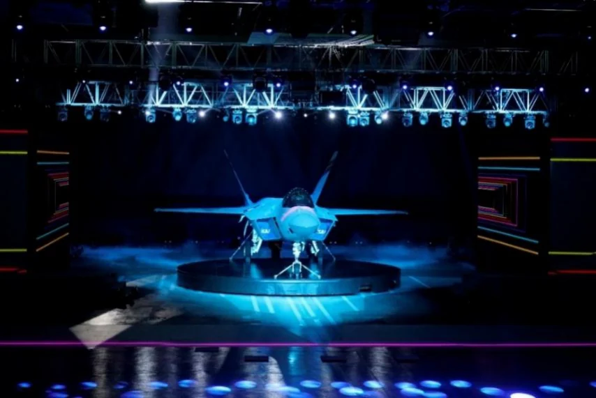
* 사진 출처: 한국항공우주산업 홈페이지(KF-21 Boramae Roll Out(21.4.9)) 체계 개발 단계에서는 KF-X, 양산 단계는 KF-21이라고 명명하지만, 용어의 혼란을 방지하기 위해 본 보고서에서는 KF-21로 통일함
특히 2024년 말, KF-21은 체계개발 종료 전임에도 불구하고 40대 규모의 Block-I 1차 양산 계약을 방위사업청과 체결하였다. 이는 2023년 5월 15일 획득한 ‘잠정 전투용 적합’ 판정 2 을 토대로 이루어진 것으로, 정부와 군이 KF-21의개발 성과와 양산 준비 능력을 사실상 인정한 사례이다.
전투기 개발은 항공공학, 재료공학, 전자·소프트웨어 공학 등 다학제적 요소가융합된 초고난도 사업으로, 일반 민간항공기보다 기술 복잡성과 인증 절차가 훨씬 엄격하다. 또한, 항공기 산업 특성상 개발지연이나 기술획득 실패는 수조원규모의 손실로 직결되며, 국제무대에서 경쟁력 상실로 이어질 수 있다. 특히 무기체계의 경우 해외로부터 부품·소프트웨어 접근이 통제될 가능성이 높아, 국산화 실패 시 운용·정비에서 장기간 구조적 취약성이 지속될 수 있다. 국회입법조사처는 KF-21 사업을 첨단 항공전자·무장 개발과 통합기술이 요구되어 개발 리스크가 매우 큰 사업으로 평가하며 우려사항을 표했다. 이러한 이유로 독자개발전투기는 기술적 완성도뿐 아니라 정치·외교적 협상력, 방산 생태계의 종합 역량이 동시에 요구되는 초대형 국가 전략사업이라 할 수 있다.
이러한 전투기 개발 난이도에도 불구하고 KAI가 전투기 독자개발 경험이 전
무한 상태에서 체계개발을 시작했다는 점이 큰 특징이다. 대한민국은 1990년대까지는 군용기 창정비 또는 조립생산에 의존하던 항공산업이 약 40년만에 KF- 21 독자개발을 수행하고 있으며 KF-21 사업 착수 후 약 11년 만에 시제기 제작과 초도 비행에 성공하였다. 이는 해외 주요 4.5세대 전투기 개발사들이 15~20 년 이상 소요한 사례와 비교할 때 개발기간 측면에서도 경쟁력 있는 성과로 평가된다.
본 연구는 KF-21 개발 과정에서 어떻게 기술흡수 기반 마련, 단계적 기술축적, 그리고 고부가가치 기술 역량 확대로 이어졌는지를 분석하고자 한다. KF-16 기술도입 생산을 통해 확보된 제조·조립·시험평가 경험은 초기 흡수 기반을 구축하는 핵심 요소로 작용하였으며, 이는 전투기 독자개발에 필요한 조직적 학습과 산업 역량의 출발점이 되었으며, T-50 공동개발 단계에서는 이러한 기반 위 '잠정 전투용 적합' 판정: 항공기나 함정과 같이 개발에서 최초 생산에 이르기까지 장기간이 소요되는 무기체계의 신속한 전력화를 위해 연구개발 중에 양산을 추진하기 위한 절차를 말한다. 에서 설계·체계종합·품질관리 역량이 고도화되었다(그림 2 참조). 동시에 3차원동시공학 기반 설계체계와 항공전자·비행제어 소프트웨어 개발 능력, 통합 시험· 검증 체계 구축은 한국의 항공산업이 독자적 성능 구현 능력을 확보했다는 점에서 의미가 크다. 이러한 일련의 과정은 후발국이 고기술·고난도 무기체계를성공적으로 독자개발하는 데 필요한 구조적 조건과 기술경영적 함의를 보여준다.
그림 2. 시기 별 전투기 도입 방식
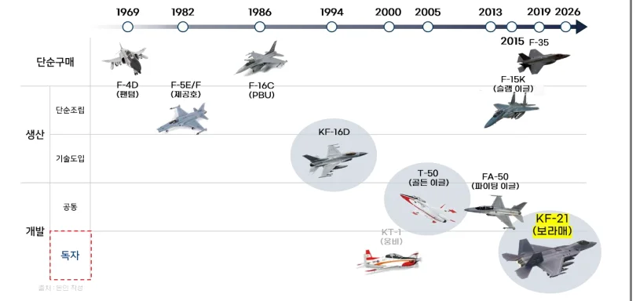
* 그림 출처: 본인 작성
1.2. 연구목적
본 연구의 목적은 KF-21 독자개발 사례를 통해 대한민국이 단기간 내 전투기독자개발 역량을 확보할 수 있었던 배경을 기술경영 관점에서 체계적으로 규명하는 데 있다. 특히 본 연구는 ‘기술자립’이라는 국가적 목표가 어떻게 실현되었는지를 설명하기 위해 다음의 세 가지 분석 목표를 제시한다
첫째, KF-21 개발의 출발점이 된 흡수 기반이 어떻게 마련되었는지를 규명한다. 이는 시대적‧정책적 배경 속에서 정부가 항공산업을 전략사업으로 인정하고, 항공우주 산업의 일원화를 추진하며, KF-16 면허생산 및 T-50 공동개발 사업을통해 기업 간 역량을 결집시킨 과정을 포함한다. 국가 재정투입의 정당성 확보, 부품 국산화 정책, 운용유지비 절감 목표 등 정치·경제·사회·기술(PEST) 측면의
환경적 요인을 종합적으로 분석하여 기술흡수 기반이 형성된 구조를 설명한다.
둘째, 이러한 기반 위에서 단계적으로 기술을 축적하며 흡수역량을 강화한 과정을 분석한다. KF-16와 T-50을 통한 실전적 설계·제조·시험 경험 축적, 외부 기술을 이해하고 적용할 수 있는 조직적 학습능력의 고도화, 부품 국산화와 품질관리 체계의 성숙 등 단계적 기술축적 경로가 KF-21 개발에서 어떻게 내재화되었는지를 살펴본다.
셋째, KAI가 새롭게 확보하거나 고도화한 기술자립 역량을 규정한다. 특히 3 차원 동시공학 기반의 설계체계 구축, 항공전자 및 비행제어 소프트웨어의 독자개발 능력 확보, 통합 검증‧시험 체계의 정립 등 고부가가치 핵심기술 역량이기술자립을 실질적으로 가능하게 한 요소였음을 분석한다.
종합적으로, 본 연구는 KF-16 면허생산과 T-50 공동개발을 통해 전투기와 같이 복잡한 산업에서 기술자립을 이루기 위해 필요한 구조적 조건과 축적·흡수· 확장의 메커니즘을 규명하고자 한다.
제 2장. 이론적 배경
2.1. 무기체계 정의 및 분류
무기체계는 전투력을 발휘하기 위해 필요한 무기와 이를 운용·지원하는 인력, 장비, 시설, 소프트웨어, 종합군수지원 요소 등을 통합한 전체 체계를 의미한다. 이는 단순한 하드웨어 장비가 아니라 전장 환경에서 목표한 성능을 발휘하기위해 필요한 모든 요소가 결합된 복합적 시스템이다.
무기체계는 기능과 운용 환경에 따라 여러 유형으로 분류되며, 대표적으로 지휘통제·통신무기체계, 감시·정찰무기체계, 기동무기체계, 함정무기체계, 항공무기체계, 화력무기체계, 방호무기체계 등이 있다(그림 3 참조). 각 체계는 고유한기술·운용 개념을 기반으로 구성되며, 상호 연계되어 국가 전력의 핵심을 구성한다.
이 중 항공무기체계는 고정익 항공기, 회전익 항공기, 무인 항공기 등으로 구분되며, 전투기 개발은 고정익 항공무기체계 중 가장 높은 기술 난이도를 가진분야에 속한다. 고정익 항공기는 고속 비행, 공기역학적 안정성, 항공전자 통합, 무장 운용 능력 등을 복합적으로 요구하므로 체계종합(System Integration) 능력이핵심이 된다. KF-16, T-50, KF-21은 모두 고정익 항공무기체계에 해당한다.
그림 3. 무기체계 분류
* 출처: 국방부 홈페이지 참고, 본인 재작성
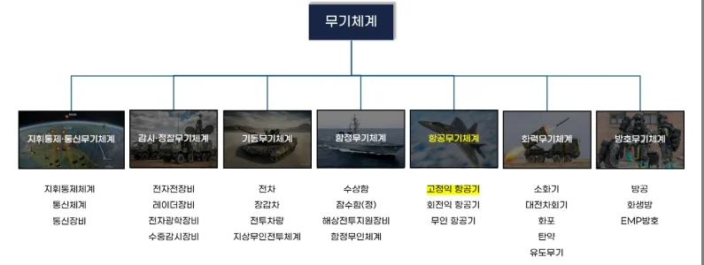
전투기 산업은 고도의 기술·자본집약적 특성을 가지는 대표적인 복합제품시스
템(CoPS: Complex Product Systems) 산업이다. Hobday에 따르면, CoPS는 다수의 하위 시스템과 구성품이 상호 의존적으로 통합되어야 하며, 이들 구성요소의 성능이 전체 시스템 성능에 직접적으로 영향을 미친다. 전투기 개발에는 항공역학
구조, 엔진, 항전장비, 무장체계, 레이더, 전자전 시스템, 소프트웨어 등 다양한전문 기술영역이 유기적으로 결합되며, 이 과정에서 수천에서 수만 개의 부품과수백 개의 공급망이 연계된다. 또한 CoPS 산업은 제품 개발과 생산 과정에서대규모 참여 기업·기관을 포함하는 산업생태계를 필요로 하며, 각 참여 주체 간의 협력·조정 능력이 중요하다. 또한, 전투기 산업은 군사적 안보와 직결되는 특수성을 가지므로, 기술 이전, 국산화 전략, 국제 공동개발, 오프셋(Offset) 3 등과같은 정치·외교적 요소가 기술개발 과정과 병행되어야 한다.
오프셋(Offset): 무기체계 국제거래에서 구매국이 계약의 일부로 공급국으로부터 기술이전, 부품생산, 공동개발, 역(逆)구매 등의 경제적 반대급부를 요구하는 제도를 의미함
2.2. 무기체계 획득 방법
무기체계 획득 방식은 크게 연구개발과 구매 두 가지로 구분된다. 연구개발은다시 기술협력생산과 체계연구개발 방식으로 나눌 수 있다(그림 4 참조).
그림 4. 무기체계 획득 방법
* 출처: 국방기술품질원, 무기체계 연구개발단계 품질관리 기술지원 가이드북
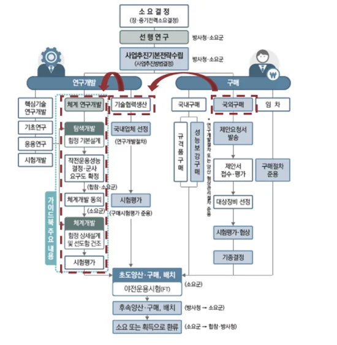
대한민국이 무기체계 중에 전투기와 같은 고정익 항공무기체계를 획득한 방법은 여러가지가 있었으며, KF-21 독자개발 이전에 획득한 사례를 살펴보면 크게 3가지 사례가 존재한다(그림 5 참조).
첫째, 구매 방식은 국내 또는 해외에서 이미 개발된 무기체계를 직접 도입하는 방식이다. 1986년 F-16 전투기 도입이 대표적 사례로, 국외구매를 통해 신속하게 전력을 확보할 수 있다는 장점이 있으나 기술 축적 효과는 제한적이다.
둘째, 기술협력생산 방식은 해외 기술을 이전 받아 국내에서 생산하는 형태다. 1994년 KF-16 면허 생산은 F-16 구매에 대한 절충교역에 따라 시작되었으며, 조립과 시험, 정비 능력 등 제조 중심의 기술 역량을 확보하는 데 효과적이었
다. 그러나 핵심기술은 이전되지 않아 기술자립으로 이어지는 데에는 한계가 있었다.
셋째, 체계연구개발 방식은 설계부터 체계종합, 시험평가까지 전 과정에 국내가 주도적으로 참여하는 방식이다. 2005년 T-50 고등훈련기 공동 개발은 F-16, Hawk-67, P-3C, CN-235 국외구매에 따른 절충교역에 따라 전투기 개발을 위한기술이 이전되었다. T-50 개발을 통해 독자 설계 능력과 비행시험, 체계종합 역량이 본격적으로 강화되는 전환점이 되었다. 이 단계에서 축적된 역량은 이후 KF-21 독자개발의 핵심 기반이 되었다.
그림 5. 무기체계 획득 사례
* 출처: 본인 작성
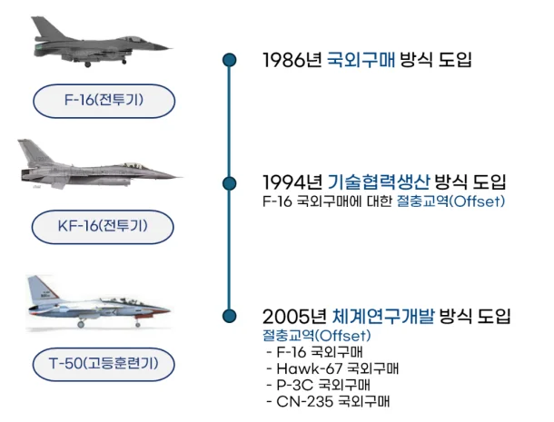
절충교역은 주로 국외구매 또는 기술협력생산과 연계해 추진되며, 기술이전, 생산참여, 부품 국산화 등 산업협력 효과를 확보하기 위한 수단으로 활용된다. 이는 단순 도입에 그치지 않고 향후 연구개발 기반을 확장하는 데 중요한 역할을 한다.
이와 같이 우리나라는 국외구매에서 기술협력생산, 그리고 체계연구개발로 이어지는 순차적 발전 구조를 통해 항공무기체계 기술을 축적해 왔다. 이러한 획
득 방식의 변화는 국가 전투기 개발 역량의 성장을 그대로 반영하는 과정이며, 후속 독자개발로 이어지는 중요한 전환점이 되어 왔다.
이처럼 무기체계 획득은 연구개발과 구매 방식의 조합을 통해 이루어지며, 각방식이 국가 기술 축적과 산업기반 강화에 서로 다른 영향을 미친다. 연구개발과 구매의 조합, 그리고 절충교역과 기술협력, 체계연구개발 전략이 복합적으로작동하는 구조 속에서 독자개발 가능성이 열리며, 후속 전투기 개발의 기술 축적 경로를 결정짓는 중요한 요소로 기능한다.
2.3. 절충교역 개념
절충교역은 무기체계를 해외에서 도입할 때 구매국이 산업적·기술적 이익을확보하기 위해 체결하는 상호보완적 협력 조치다. 단순히 무기를 구입하는 데그치지 않고, 기술이전, 생산 참여, 부품 국산화, 국내 기업 참여 확대 등 산업기반을 강화하기 위한 요구 조건을 포함한다(그림 6 참조).
절충교역은 특히 국외구매 또는 기술협력생산 사업과 연계되어 추진되며, 구매 규모가 클수록 절충교역의 적용 범위와 강제력도 커진다. 이를 통해 도입국은 해외 의존도를 완화하고, 향후 연구개발 기반을 확장할 수 있는 기회를 얻는다.
그림 6. 절충교역 개념도
* 출처: 네이버 블로그, 방산 수출과 절충교역, 본인 재작성
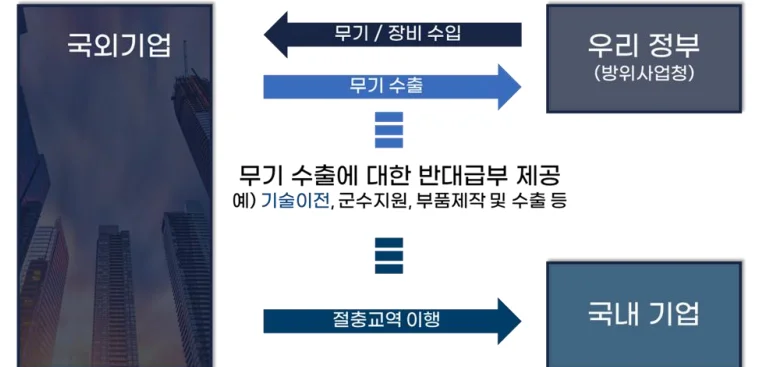
2.4. 혁신이론
본 연구에서는 KF-21 독자개발 사례를 분석하기 위해 혁신 연구 분야에서 널리 활용되는 이론인 흡수역량 이론을 통해 대한민국, 특히 KAI가 외부 지식을어떻게 받아들이고, 어떻게 혁신 역량을 키워가는지를 분석한다.
흡수역량(Absorptive Capacity)은 기업이 외부에서 들어오는 지식을 인지하고, 획득하고, 소화하고, 내부에서 재구성하며, 최종적으로 활용해 혁신을 만들어내는 능력을 의미한다. 이 개념은 Cohen과 Levinthal이 제시한 것으로, 외부 지식을 얼마나 잘 받아들이는지는 기업 내부에 이미 축적된 사전 지식과 경험에 의해 크게 좌우된다고 주장한다.
흡수역량의 핵심 특성은 다음과 같다. 첫째, 경험이 누적될수록 다음 프로젝트에서의 학습 능력이 강화되는 누적성이다. 둘째, 과거에 쌓인 지식이 새로운지식을 받아들이는 데 영향을 주는 경로 의존성이다. 셋째, 연구개발 투자, 인력교육, 조직 구조 등과 같은 조직적 학습 요소가 흡수역량의 수준을 결정한다. 흡수역량은 네 가지 단계로 작동한다. 획득 단계에서 외부 지식을 받아들이고, 동화 단계에서 이를 이해하며, 변형 단계에서 내부 맥락에 맞게 재구성하고, 활용 단계에서 제품이나 기술혁신을 만들어낸다.
이 이론은 전투기 개발처럼 복잡한 지식이 많이 요구되는 분야에서 특히 중요하다. 외부 기술을 단순히 받아오는 것만으로는 기술 자립이 이루어지지 않으며, 이를 소화하고 다시 재창출할 수 있는 기업 내부의 역량이 필요하기 때문이다. KF-16, T-50, KF-21로 이어지는 축적된 KAI의 경험은 흡수역량 이론이 실제로작동한 대표적 사례라고 할 수 있다.
제 3장. 연구 가설
3.1. 연구 질문
본 연구는 KAI가 어떻게 전투기 독자개발에 성공할 수 있었는지를 규명하기위해 명확한 연구질문을 설정하였다. 특히 KAI가 면허생산 단계에서 공동개발, 그리고 독자개발로 이어지는 과정을 거치며 어떠한 기반과 구조를 통해 기술자립을 실현했는지를 중심으로 분석하고자 한다. 이를 위해 본 연구는 전투기 개발 역량의 성장은 단일 사업의 결과가 아니라 수십 년 동안 축적된 기술흡수경험과 조직적 학습의 산물이라는 가설을 세웠다. 즉 한국은 KF-16 면허생산을통해 제조·조립·시험평가 기반을 확보하고, T-50 개발을 통해 설계와 체계종합 능력을 강화하였으며, 이러한 단계적 축적이 KF-21 독자개발 성공의 핵심 요인이라는 관점을 제시한다.
또한 기술자립의 성과는 단순히 한 기업의 성취가 아니라 국가 정책, 산업 생태계, 기술협력, 조직 능력, 인력 시스템이 결합된 결과라는 점을 고려하여 다음의 세부 연구질문을 도출하였다.
1. 전투기 독자개발을 성공시킨 요인은 무엇인가?
2. 전투기와 같은 국내 첨단산업 발전을 위한 시사점은 무엇인가?
3.2. 연구 흐름
본 연구는 체계적인 분석을 위해 크게 사례 분석, 성공요인 분석, 성과 분석의 세 단계로 구성된다(그림 7 참조).
사례 분석 단계에서는 KAI의 개요, 최근 분기 실적 및 타임라인을 분석한다. 특히, KAI의 타임라인을 크게 3단계로 나누어, KF-16, T-50, KF-21이라는 세 사업을 중심으로 기술축적의 흐름을 검토한다. 각 사업별로 추진 방식, 참여 기관, 기술이전 범위, 조립·생산 과정, 설계·시험평가 경험, 체계종합 요소 등을 비교하며 한국 전투기 기술의 발전 단계를 설명한다.
성공요인 분석 단계에서는 한국의 전투기 개발 역량이 성숙한 과정을 흡수기반 마련, 흡수역량 강화, 역량 확장이라는 세 가지 구조로 분류해 검토한다. 흡수 기반 마련은 정부 정책, 산업 일원화, 국제협력 구조, 기술협력생산 등을포함하며 이후 체계연구개발을 통해 설계·시험평가·체계종합 역량이 강화된 과정을 중심으로 기술한다. 마지막으로 KF-21에서 확인되는 설계체계 고도화, 항공전자·비행제어 소프트웨어 내재화, 통합 시험·검증 체계 구축 등을 역량 확장의 단계로 분석한다.
성과 분석 단계에서는 이러한 기술축적 과정이 실제 경제적·산업적 성과로 나타난 측면을 평가한다. 경제적 성과는 일자리 창출, 시장 효과, 수출 기반 확대등을 검토하며, 산업적 성과는 KF-21 개발 기간을 중심으로 선진국의 동등 이상의 전투기 개발 기간과 비교한다. 또한, 대한민국과 유사한 해외 사례와 비교하여 KAI의 전투기 독자개발의 우수성을 입증한다. 마지막으로 이러한 분석을종합해 한국 전투기 산업이 얻은 기술경영적 의미와 향후 발전 방향을 제시한다.
그림 7. 연구 흐름
* 출처: 본인 작성
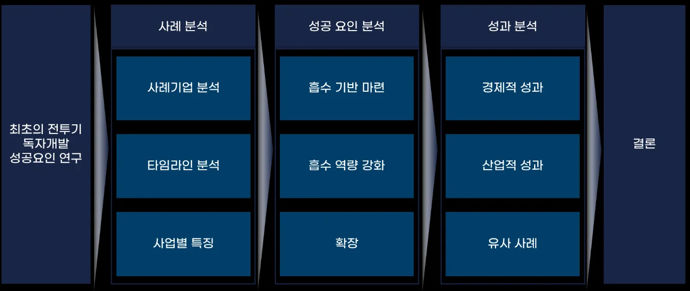
제 4장. 사례 분석
4.1. 기업 분석
KAI는 1999년 삼성항공, 대우중공업, 현대우주항공이 통합되며 설립된 대한민국 대표 항공우주 체계종합기업으로, 고정익 항공기, 회전익 항공기, 무인기, 성능개량 사업 등을 포함해 약 900여 대 이상의 항공기를 제작·납품해왔다. 현재 약 5천 명 이상의 인력이 근무하고 있으며, 완제기 생산, 구조물 제작, 항공전자 기술, 군수지원 능력을 포괄하는 종합적 개발 및 생산체계를 구축하고 있다.
특히 고정익 항공기 분야에서는 KT-1 기본훈련기, T-50 고등훈련기, FA-50 경공격기, KF-21 전투기까지 이어지는 제품 라인업을 보유하고 있다. 이러한 포트폴리오는 한국 항공산업이 단순 조립 중심의 산업에서 설계·체계종합 중심의 고
부가가치 산업으로 전환하는 과정에서 핵심적 역할을 수행해왔다.
2025년 2분기 수주 실적을 보면 KF-21 최초양산 잔여 물량 계약과 T-50 PBL 3 차 사업 등이 반영되면서 국내 사업 부문에서만 2조원이 넘는 규모를 기록하였다. 이는 전체 수주액 3조 1천여억원 중 약 65%에 해당하는 비중으로, 전투기분야가 KAI 수주 실적의 중심축으로 자리 잡고 있음을 보여준다. 특히 KF-21 양산계약은 향후 수년간 안정적인 매출 기반을 제공하며, 동시에 국내 항공산업의 대규모 생산·조립·검증 역량을 지속적으로 운용할 수 있게 하는 중요한 사업이다(그림 8 참조).
그림 8. KAI 25.2Q 분기 실적 요약
* 출처: KAI 2025년 2분기 경영실적 IR 자료, 본인 재작성
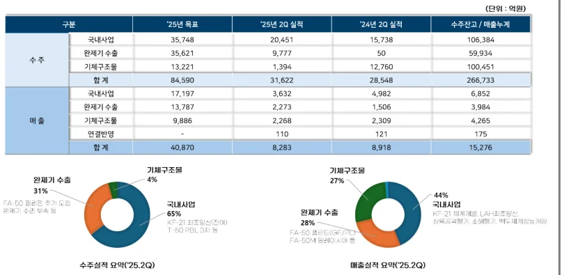
4.2. 타임라인 분석
KAI의 타임라인은 면허생산 기반의 태동기, 공동개발 중심의 성장기, 독자개발 중심의 완성기라는 세 단계로 구분할 수 있다(그림 9 참조).
태동기(1980년대~2005년)는 KF-16 면허생산(KF-16 사업)을 중심으로 전투기조립·시험평가·품질관리 능력을 확보한 시기다. 이 시기 한국은 F-16 도입을 통해 본격적인 항공기 생산 기반을 구축하였고, 항공기 구조체 제작, 전장품 통합, 생산공정 관리체계를 내재화하는 기반을 마련하였다.
성장기(2006~2014년)는 T-50 고등훈련기 공동개발을 통해 설계·비행제어·체계
종합 능력을 획득한 기간이다. T-50 양산기 1호기 출고(2005년)를 시작으로 수출확대, FA-50 파생기종 양산, 인도네시아·필리핀·이라크 등 해외 계약이 이어지며한국 항공산업의 경쟁력이 본격적으로 도약하는 계기가 되었다.
완성기(2015년~현재)는 KF-21 독자개발을 통해 한국이 전투기 설계·개발·시험평가의 전 과정에 대한 주도권을 확보한 시기다. 2015년 체계개발사업 계약 이후 2021년 시제 1호기 출고, 2022년 초도비행 성공, 2023년 잠정전투용적합 판정획득 등을 통해 한국의 전투기 독자개발 능력이 입증되었다.
그림 9. KAI 타임라인 분석
* 출처: 금융감독원 한국항공우주산업 사업보고서, 본인 재작성
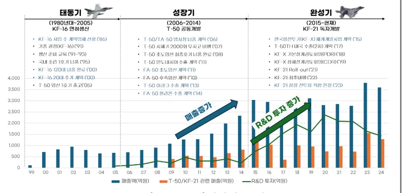
4.3. 주요 사업 분석
한국의 전투기 개발 역량은 국외구매에서 기술협력생산, 체계연구개발을 거쳐독자개발에 이르는 단계적 발전을 통해 축적되어 왔다. 이러한 발전 흐름은 KF-16 전투기 면허생산, T-50 고등훈련기 공동개발, KF-21 전투기 독자개발이라는 세 가지 대표 사업에서 뚜렷하게 확인된다(그림 10 참조).
4.3.1. KF-16 전투기 면허생산
KF-16 사업은 1983년부터 1994년까지 진행된 대한민국 최초의 첨단 전투기도입 사업으로, F-16 전투기를 국내에서 면허생산하는 방식으로 추진되었다. 이사업의 주요 특징은 미국 전투기 제조업체와의 기술협력을 통해 항공기 조립·생
산 기술을 확보하는 것이었다.
사업은 총 3단계로 진행되었다. 준비단계('91-'94)에서는 생산준비를 수행했고, 1단계('93-'94)에서는 FMS4 완제기 12대를 도입했다. 2단계('94-'96)에는 한국내 상용부위 초립생산 및 소요자재 FMS 방식으로 36대를 조립했으며, 3단계('97-'00) 에는 한국내 상용부위 국산화 생산을 통해 72대를 면허생산하여 총 120대를 확보했다.
이 사업을 통해 한국은 항공기 조립공정 기술, 품질보증 체계, 시험평가 능력등 제조 기반 기술을 습득할 수 있었다. 특히 삼성항공을 주계약업체로 하여 대우, 대한항공 등이 기체업체로, 전자/보기업체들이 참여하는 협력 체계를 구축함으로써 국내 항공산업 생태계를 발전시키는 중요한 계기가 되었다. 그러나 설계 기술과 핵심 소프트웨어는 이전되지 않아 완전한 기술자립에는 한계가 있었
다.
4.3.2. T-50 고등훈련기 공동개발
T-50 개발 사업은 KF-16 면허생산의 절충교역(Offset) 원칙으로 시작된 한국최초의 초음속 전투기 개발 사례로, F-16, F-15 등 초음속 전투기를 조종하기 위한 고등훈련 과정에서 사용되었다. 본 사업의 핵심은 최초의 디지털 비행제어
시스템(Fly-by-Wire) 적용과 미 록히드마틴 기술지원하에 현지 설계팀 파견 등의기술이전 방식이었다.
사업은 크게 3단계로 구성되었다. 준비단계에서는 영국 BAE사 Hawk기 절충교역으로 고등훈련기 설계기술, 시뮬레이터 기술이전 등이 이루어졌고, 1997년 10월 KAI 주계약업체 계약을 체결했다. 탐색개발('92~'95) 단계에서는 확대사업 (KFP 절충교역, ADD 주관)으로 록히드마틴사와 3년간 파견 기술이전을 수행했다. 체계개발('96-'97) 단계에서는 KAI가 체계종합, 동체설계, 제작, 시스템 장비통합, 최종조립을 담당했고, 록히드마틴이 공동 체계개발을 지원했다.
FMS : Foreign Military Sales(대외군사판매)의 약어, 미국 정부가 보증하는 대신 지식재산권 보호차원에서 기술정보가 제공되지 않으며 장비의 분해도 금지함
이를 통해 한국은 항공전자 통합, 비행제어 시스템 개발 등 핵심 공정 기술을습득했으며, 특히 KAI는 체계종합 능력을 확보하는 계기가 되었다. T-50의 성공은 FA-50, TA-50 등 파생형 개발로 이어졌고, 이후 폴란드, 이라크 등 해외 수출성과로 연결되어 한국 방산 수출의 효시가 되었다.
4.3.3. KF-21 전투기 독자개발
KF-21 개발 사업은 공군의 노후 전투기(F-4, F-5) 도입에 따른 전력 공백을 보충하고, 미래 전장환경 개념에 부합하는 성능을 갖춘 한국형전투기를 연구개발로 확보하는 사업이다. 체계개발은 2026년 6월 종료 예정이며, 양산은 총 120대의 양산기 생산을 계획하고 있다.
주요 제원은 최대속력 44,000 lb, 최대속도 2,200 km/h, 최대탑재량 7,700 kg이며, 총 6대의 시제기가 운용되고 있다.
KF-21은 한국이 처음으로 독자 설계한 4.5세대 전투기로서, 이전의 면허생산이나 공동개발과는 달리 국내 연구개발을 통한 독자개발 방식을 채택했다. 탐색개발 및 체계개발 단계를 통해 항공전자 및 비행제어 소프트웨어, 3차원 동시공학 기반 설계체계, 무장통합 능력 등의 핵심기술을 국내에서 직접 개발하며 선진국 수준의 개발 역량을 확보했다.
KF-16, T-50, KF-21의 연속적 개발 경험은 한국이 기술협력생산 기반의 제조역량에서 출발하여 체계연구개발 기반의 설계·종합 능력으로 발전하고, 궁극적으로는 독자개발 기반의 핵심기술 내재화 단계로 도달했음을 보여준다(그림 10 참조). 이러한 기술 축적 경로는 다른 국가 대비 높은 자립도와 후속 기종 개발연결성을 가진다는 점에서 차별적 경쟁우위를 제공하며, 후발국의 기술자립 모델로서 중요한 함의를 지닌다.
그림 10. KAI의 연속적 개발 경험
* 출처: 본인 작성
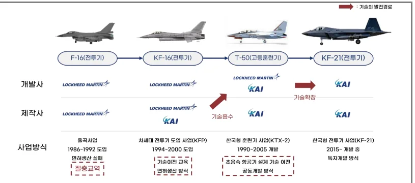
제 5장. 성공요인 분석
대한민국 최초의 한국형 전투기인 KF-21 보라매 개발 사례를 중심으로, 기술후발국이었던 한국이 어떻게 단기간 내에 초음속 전투기 독자개발 역량을 확보할 수 있었는지를 분석하고자 한다. 이 분석은 단순히 개발 과정을 시간 순서대로 나열하는 것이 아니라, Cohen & Levinthal(2000)이 제시한 기술경영학의 흡수역량 이론이라는 학문적 틀을 바탕으로 접근하였다.
흡수역량이란 기업이나 국가가 외부의 새로운 지식을 발견하고(identify), 이를자신의 것으로 받아들여 소화(assimilate)하며, 최종적으로 이를 활용(exploit)하여새로운 혁신을 만들어내는 능력을 의미한다. 이러한 관점에서 한국의 전투기 개발 여정을 흡수 기반 마련, 흡수역량 강화, 역량 확장의 3단계로 구분하여 각단계에서 어떤 전략적 선택과 노력이 있었는지 살펴보고자 한다.
5.1. 흡수 기반 마련
전투기를 독자적으로 개발한다는 것은 단순히 기술자 몇 명을 투입하거나 연구소 하나를 세운다고 해서 가능한 일이 아니다. 수십만 개의 부품이 유기적으로 결합되어야 하고, 첨단 소재와 전자 시스템이 통합되어야 하며, 이 모든 것을 안전하게 만들고 시험할 수 있는 인프라가 필요하다. 따라서 독자개발이라는
거대한 혁신을 이루기 위한 첫 번째 단계는 이러한 기술을 받아들일 수 있는안정적인 기반을 마련하는 것이었다. 1980년대 후반부터 2000년대 초반까지 이어진 이 시기는 정부의 강력한 의지, 국제 정세의 변화, 그리고 국내 산업 구조의 재편이 맞물리면서 기술을 담을 수 있는 그릇을 만드는 과정이었다.
5.1.1. 정부 주도의 강력한 리더십
정부의 정책적 리더십은 한국이 전투기 독자개발을 시작할 수 있었던 가장중요한 출발점이었다. 특히 정치, 경제, 사회, 기술(PEST) 환경이 정부 주도 전략을 뒷받침하면서 항공산업 육성이 국가적 과제로 자리 잡았다.
먼저 정치적 측면에서는 냉전 종식기 이후 미국이 동맹국에게 자주국방 능력강화를 요구하던 국제 정세가 중요한 배경이 되었다. 한국 역시 외부 의존도가높은 군 구조를 더 이상 유지하기 어렵다는 판단을 하면서, 전투기 기술 확보가국가 안보 전략의 핵심으로 부상했다. 이러한 정치적 환경은 정부가 항공산업을단순한 산업정책이 아니라 국가안보 전략의 한 축으로 바라보게 만든 결정적계기였다.
경제적 측면에서도 정부 개입이 필수적이었다. KF-16 면허생산, T-50 공동개발, KF-21 독자개발은 모두 수조 원의 예산이 필요한 초대형 사업이었기 때문에 민간 기업이 독자적으로 추진할 수 있는 수준을 넘어섰다. 항공산업은 투자 대비회수 기간이 길고 실패 위험이 커서 시장 원리만으로는 진입하기 어려운 분야다. 정부가 개발비를 지원하고 장기간의 안정적인 수요를 약속함으로써 기업이위험 부담을 완화하고 기술 학습에 집중할 수 있는 기반을 제공했다.
사회적 측면에서는 자주국방에 대한 국민적 공감대와 산업고도화에 대한 요구가 높아지고 있었다. 1990년대 이후 한국 사회는 제조업 중심의 성장 구조에서 벗어나 첨단 산업으로의 전환을 필요로 했고, 항공산업은 이를 대표하는 국가 전략 산업으로 주목받기 시작했다. 특히 한국형 전투기 개발은 단순한 무기도입을 넘어 고급 기술 인력 양성, 지역 경제 활성화, 산업 생태계 확장이라는사회적 요구와도 맞물렸다.
마지막으로 기술적 측면에서는 정부가 항공기 기술 확보를 위한 구체적 제도와 인프라를 마련했다. 기술 보호가 강한 전투기 분야의 특성상 해외 기술을 단순 구매하는 방식으로는 기술 내재화가 불가능했다. 이를 해결하기 위해 정부는 KF-16 면허생산 시절부터 절충교역 제도를 적극적으로 활용해 생산기술을 단계적으로 받아왔고, T-50 공동개발 과정에서는 선진 기술을 학습할 수 있는 참여구조를 설계했다. 더불어 국가차원의 연구기관인 ADD가 선행 연구를 담당하고이를 민간 기업에 이전하는 체계를 구축해 기술 축적의 속도를 끌어올렸다.
이처럼 정치, 경제, 사회, 기술 환경이 서로 맞물리면서 정부는 항공산업 육성을 위한 강력한 조정자 역할을 수행할 수 있었다. 단순한 재정 지원을 넘어 부처 간 협업 체계를 구축하고, 법과 제도를 정비하며, 기업의 역량을 한곳으로모을 수 있도록 산업 재편을 추진했다. 이러한 일관된 정책적 리더십이 기술 흡수 기반을 만들어냈고, 이후 T-50 개발과 KF-21 독자개발로 이어지는 기술 축적경로의 출발점이 되었다.
5.1.2. 기업의 역량 집중
정부의 정책적 지원만으로는 항공산업 기반을 충분히 구축하기 어려웠다.
1990년대 후반까지 한국의 항공산업은 삼성항공, 대우중공업, 현대우주항공이각각 항공사업을 운영하는 구조였다. 세 기업은 협력보다는 경쟁 관계에 있었고, 제한된 국내 시장에서 중복 투자로 인해 규모의 경제를 만들기 어려웠다. 각 기업은 별도로 인력을 확보하고 설비를 구축해야 했으며, 해외 선진 기업과협상할 때도 개별적으로 대응해야 했기 때문에 협상력 역시 낮을 수밖에 없었다.
이 문제를 해결하기 위해 정부는 항공산업 역량을 하나로 결집시키는 ‘항공통합법인 설립 지원대책’을 추진했다. 이는 단순한 기업 합병이 아니라 항공산업을 전략산업으로 육성하기 위한 구조적 개편 정책이었다. 이 대책은 다음과같은 다섯 가지 핵심 요소로 구성되었다.
첫째, 정부는 방위산업 특별조치법을 기반으로 항공우주산업을 특정사업자로지정하고, 정부사업에 독점적으로 참여할 수 있도록 보장했다. 이를 통해 통합법인은 안정적인 사업 환경 속에서 장기 개발에 집중할 수 있었다.
둘째, 개발비를 군수 사업은 전액, 민수 사업도 50퍼센트 이내에서 지원함으로써 기업의 재무 부담을 크게 줄였다. 항공산업은 초기 투자비가 매우 큰 산업이기 때문에 이러한 정부의 직접 지원은 기업이 연구개발에 본격적으로 투자할수 있는 결정적 계기가 되었다.
셋째, 정부는 군용기 소요 물량을 조기에 확정하고, 국제 공동개발 사업 추진시 국가가 적극 지원하는 방식으로 안정적인 사업 물량을 보장했다. 이는 기업이 안정된 시장을 확보함으로써 생산체계를 유지하고 기술을 지속적으로 확장할 수 있는 환경을 만들었다.
넷째, 통합법인의 자본 안정성을 위해 산업은행 등 채권금융기관이 출자자로참여하도록 구조를 설계했다. 이는 재무적 기반을 단단히 해주어 기업이 대규모개발사업을 장기간 수행할 수 있는 재정적 체력을 확보하는 데 중요한 역할을했다.
다섯째, 민간 분야에서도 외국인 투자 유치를 지원하여 글로벌 자본과 기술을끌어올 수 있는 여건을 마련했다.
이러한 정책적 기반 위에서 1999년 삼성항공, 대우중공업, 현대우주항공의 항공 부문이 통합되어 KAI가 출범했다(그림 11 참조). 이는 단순한 합병이 아니라정부가 주도한 산업 구조혁신 프로젝트였다. 기업 통합을 통해 인력이 한곳으로모였고, 중복 설비가 정리되었으며, 개발 역량과 생산 역량이 모두 집중되는 효과가 나타났다.
그림 11. 항공 3사 통합법인 설립
* 출처: 한국항공우주산업 20년사 역사편, 본인 재작성
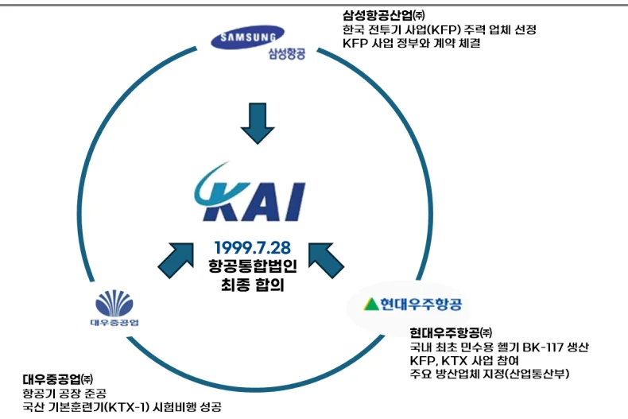
특히 통합법인 출범은 기술 축적의 단절을 해소하고, 하나의 플랫폼에서 설계 –생산–시험까지 이어지는 일관된 조직 구조를 만들었다. 또한 해외 기업과의협상에서도 한국 전체를 대표하는 단일 창구가 생기면서 협상력이 크게 강화되었다. 이후 KF-16 생산, T-50 공동개발, KF-21 독자개발로 이어지는 기술 축적 과정은 이러한 통합 구조가 아니었다면 불가능했을 것이다. 결과적으로 항공통합법인 설립은 단순한 경영 효율화가 아니라 한국 항공산업의 기술 흡수 기반을완성한 결정적 조치였으며, 이후 전투기 독자개발 역량 확장의 출발점이 되었다.
5.1.3. 기술 습득 경로 확보
기술 선진국들은 자국의 핵심 방산 기술을 쉽게 넘겨주지 않는다. 특히 전투기와 같은 첨단 무기 체계는 국가 안보와 직결되기 때문에 기술 이전에 매우신중하다. 따라서 한국은 단순히 완성된 전투기를 돈 주고 사는 방식이 아니라,
기술을 배우면서 동시에 전투기를 확보하는 전략적 접근을 채택했다. 이것이 바로 절충교역(Offset) 방식이다. 절충교역 효과를 극대화하기 위해 참여형 기술습득 구조를 채택했다(그림 12 참조).
한국은 1990년대 초반 KF-16 면허생산 사업을 추진하면서 이러한 전략을 본격적으로 실행했다. KF-16은 미국 GD(General Dynamics)가 개발한 F-16 전투기를한국에서 면허 생산하는 사업이었다. 이 과정에서 한국은 단순히 완제품을 수입하는 대신, 미국으로부터 설계 도면과 생산 기술을 제공받고, 국내에서 직접 조립 생산하는 방식을 선택했다. 물론 초기에는 핵심 부품의 대부분을 미국에서수입해야 했지만, 사업이 진행되면서 점차 부품 국산화율을 높여나갔다.
KF-16 면허생산 과정에서 한국의 엔지니어들은 미국의 품질 관리 기준과 공정 기술을 직접 체험하고 배울 수 있었다. 예를 들어, 항공기 제작에서는 나사하나를 조이는 것조차도 정확한 토크 값이 지정되어 있고, 모든 작업이 문서화되어야 한다. 이러한 엄격한 품질 관리 문화와 절차를 현장에서 익히면서 한국의 항공산업은 국제 수준의 생산 역량을 갖추어 나갔다. 이는 단순히 기술 자료를 받아보는 것과는 차원이 다른, 참여형 학습 구조를 통한 실질적인 기술 이전이었다. 또한, 기술자문요원들과 기능 부서의 근무위치를 통일시키면서 밀접한관계를 유지하고, 긴밀한 협조를 받을 수 있었다.
KF-16 사업을 통해 KAI(당시 삼성항공)은 국내기업 최초로 대기업 계약이행관리 전담 조직을 운영하게 되었다. 당시 국내 재벌기업들이었던 현대, 대우, 럭키금성(現 LG), 한국화약(現 한화), 기아, 한진(現 대한항공) 등 내노라 하는 기업군에 소속된 협력업체들의 관리와 지도, 육성을 도맡아, 면허생산이라는 한가지 목표로 융화시켜 끌어나갈 조직의 운영이 필요했다. 이러한 조직 운영을 통해 기업간 문화와 업무 및 사고 방식을 변화시켜 이끌 수 있었다.
그림 12. KF-16 참여형 기술습득 구조
* 출처: “국내 항공산업 기술수준 제고방안에 관한 연구:
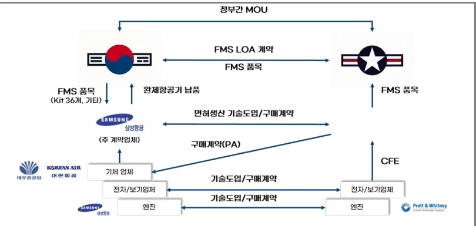
군용항공기 사업 사례분석을 중심으로”, 본인 재작성
KF-16 면허생산을 통해 제조 기반을 다진 이후, T-50 고등훈련기 개발 사업에이르러 단순 생산을 넘어선 체계종합(System Integration) 역량 확보를 목표로 협력형 기술습득 구조를 새롭게 정립했다(그림 13 참조). 이는 KAI가 주도적으로시스템 종합 및 최종 조립을 수행하고, 기술 원천을 보유한 록히드마틴 (Lockheed Martin)이 기술개발지원(TA: Technical Assistance)을 수행하는 형태로, 선진 기술을 체계적으로 흡수하기 위한 고도의 전략적 프레임워크였다.
이 구조의 핵심은 개발 과정에서 발생할 수 있는 기술적 난제와 리스크를 실시간으로 해결하며 노하우를 내재화하는 데 있었다. 이를 위해 KAI는 록히드마틴과 1:1 엔지니어 팀(KAI-LM 1:1 Engineer Team)을 구성하여 이상 현상 발생 시즉각적으로 대응할 수 있는 체계를 갖추었다. 이는 문서상의 기술 이전을 넘어, 현장에서의 직접적인 소통과 문제 해결 과정을 통해 암묵적인 설계 지식까지흡수하려는 의도였다. 또한, 체계종합 업체의 필수 역량인 공급망 관리 능력을배양하기 위해, 미국 현지에 구매 사무소 및 Chief Engineer Office를 설립하여 운영했다. 이를 통해 KAI는 147개에 달하는 해외 협력업체와 장비업체들을 직접관리하며 글로벌 소싱과 부품 통합 관리 역량을 확보할 수 있었다. 무엇보다 이
시기의 결정적인 성과는 실무진과 경영진의 집요한 협상을 통해 비행제어 비행운용 프로그램(Flight Control OFP)을 획득한 것이다. 항공기의 '뇌'에 해당하는 비행제어 소프트웨어 기술을 확보함으로써, KAI는 하드웨어 조립 수준을 넘어 항공기 전체 시스템을 통제하고 운용할 수 있는 진정한 의미의 체계종합 역량의기틀을 마련하게 되었다.
그림 13. T-50 협력형 기술습득 구조
* 출처: “한미간 T-50 항공기 공동개발을 위한 전략적 제휴 분석과 정책과제”, 본인 재작성
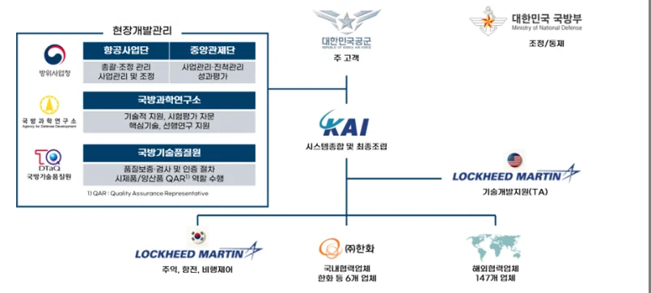
5.2. 흡수역량 강화
흡수 기반이 마련되었다고 해서 곧바로 독자 개발이 가능한 것은 아니다. 기반 위에서 실질적인 역량을 키우는 과정이 필요하다. 한국은 T-50 고등훈련기공동개발 사업을 통해 외부의 선진 기술을 적극적으로 학습하고 이를 조직 내부의 역량으로 전환하는 흡수역량 강화 단계로 진입하였다. 이 단계의 핵심은단순히 부품을 조립하는 제조 기술을 넘어서, 항공기를 처음부터 설계하고 여러시스템을 통합하는 고차원적인 엔지니어링 능력을 확보하는 데 있었다.
5.2.1. 경험 획득 및 인력의 양성
기술 습득 구조를 마련한 KAI는 그 틀 안에서 실질적인 역량을 채우기 위해, 사업 단계별로 차별화된 지식 흡수 전략을 구사했다. KF-16 사업이 생산 현장에서 몸으로 부딪히며 익히는 참여형 경험 획득이었다면, T-50 사업은 흡수한 지
식을 내재화하는 과정이었다.
먼저 KF-16 단계에서는 참여형 경험 획득 방식이 핵심이었다. 엔지니어들은원제작사 현지에서 직접 생산공정을 관찰하고 국내 생산현장에서 실습을 병행하며 기본 제조기술을 몸으로 익혔다. 당시 기술자문요원별로 전담 인력을 배치하여 자문 효과를 극대화했고, 공용 사무실을 사용하며 수시 회의를 진행해 작은 노하우까지 빠짐없이 흡수했다(그림 14 참조). 이를 통해 국내 엔지니어들은복합재 가공, 전자빔 용접 등 약 1600여 개의 생산기술을 축적할 수 있었다. 당시 기술연수를 담당했던 관계자의 회고록을 살펴보면 이 경험을 세 가지로 평가했다.
첫째, 항공기 생산의 기본이 되는 생산기술과 품질관리 개념을 확실히 익히는기회가 되었고, 두번째로는 기술에 직접 참여하지 못한 젊은 인력을 후속 신규자문요원의 연수 담당자로 키워 조직의 인력 기반을 확장할 수 있었다. 마지막으로, 해외 업체의 작업 방식과 문화를 그대로 체득하면서 한국 엔지니어에게새로운 시각과 일하는 방식을 정착시키는 계기가 되었다고 평가했다.
그림 14. KF-16 생산 및 기술 교육을 받는 엔지니어들
* 출처: 꿈을 현실로 KF-16
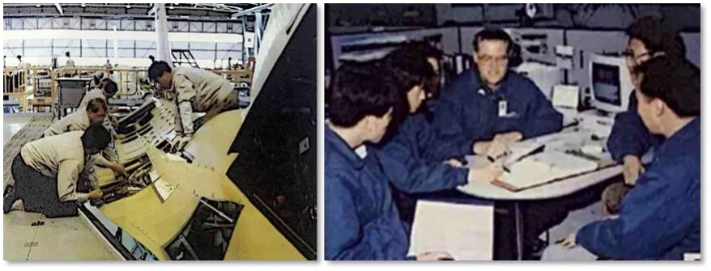
이어진 T-50 공동개발 단계에서는 흡수 지식의 내재화가 본격화되었다. KAI는동일한 관심분야를 가진 엔지니어들이 모인 연구조직을 활성화해 학습체계를운영했다. 기술 자료를 추적하고 공유하며 문서화하는 과정을 정례화했고, 우수한 기술 성과는 보상제도를 통해 조직 전체로 확산했다. 이와 같은 조직 학습
기반은 공동개발 과정에서 발생하는 설계 변경, 시험평가, 문제 해결 과정에서중요한 역할을 했다. R&D 학습조직의 활동도 꾸준히 확대되었다. 1994년 약 20 건 수준이었던 논문과 스터디 활동은 사업이 진행될수록 증가해 2003년에는 70 건 이상, 최근에는 연간 200건을 넘어서는 등 학습조직이 성숙한 형태로 자리잡았다(그림 15 참조). 이 같은 연구기반 강화는 T-50 개발 기간 동안 설계 기술과 시험평가 능력이 눈에 띄게 성장하는 데 중요한 기여를 했다.
그림 15. T-50 개발기간 R&D 학습조직 활동현황
* 출처: “한미간 T-50 항공기 공동개발을 위한 전략적 제휴 분석과 정책과제”, 본인 재작성
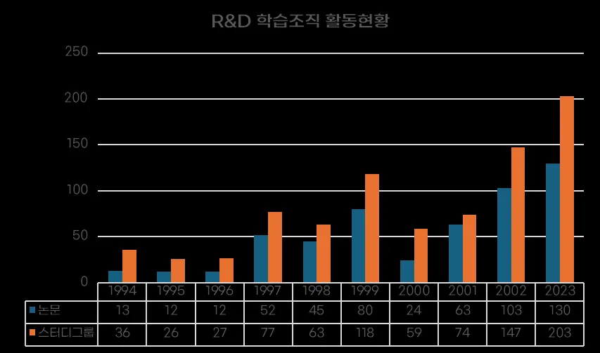
결국 KF-16의 현장 중심 경험 축적과 T-50의 지식 내재화 활동은 서로 연결되면서 후속 전투기 개발에서 요구되는 높은 수준의 기술 역량을 형성하는 핵심적인 단계로 작용했다. 이러한 단계적 학습과 조직적 경험 축적은 이후 KF- 21 개발에서 독자적인 비행제어 소프트웨어와 설계 역량을 확보할 수 있는 기반이 되었다.
5.2.2. 기술획득 및 관리 시스템 구축
현대 항공기 개발은 엄청난 양의 데이터를 다루는 작업이다. 전투기 한 대에는 수십만 개의 부품이 들어가고, 각 부품의 설계 도면, 재질 규격, 조립 순서,
시험 결과 등이 모두 문서화되어야 한다. 또한 공기역학 시뮬레이션, 구조 해석, 시스템 통합 시험 등 개발 과정에서 생성되는 기술 데이터의 양도 방대하다. 만약 이러한 데이터가 체계적으로 관리되지 않으면, 개별 엔지니어가 과거에 누가무엇을 했는지 알 수 없게 되고, 같은 실수를 반복하거나 이미 해결된 문제를다시 풀어야 하는 비효율이 발생한다.
KAI는 이미 KF-16 면허생산 당시부터 데이터 관리의 중요성을 인식하고 있었다. 미국으로부터 받은 방대한 기술 자료를 체계적으로 분류하고 저장하는 시스템을 구축했으며, 이를 통해 필요한 정보를 빠르게 찾아낼 수 있는 능력을 키웠다(그림 16 참조). 또한 미국의 시스템과 호환 가능한 데이터베이스를 구축하여, 기술 자료를 주고받을 때 포맷이나 규격 차이로 인한 문제가 발생하지 않도록 했다.
그림 16. KF-16 기술자료 공유 체계
* 출처: “꿈을 현실로 KF-16”
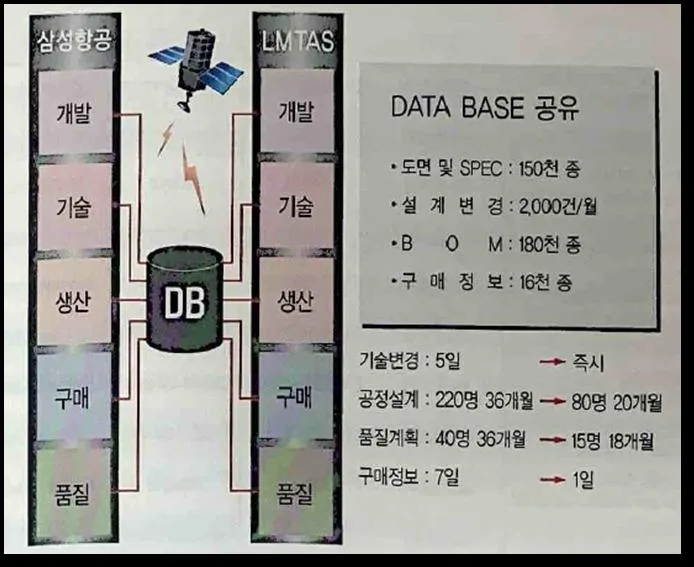
T-50 개발 단계에서는 이러한 경험을 바탕으로 한층 더 발전된 지식 공유 시스템을 구축했다. TAMS(기술획득관리 전산시스템)라는 기술자료 공유 체계를도입하여, KAI와 정부, 협력업체 간에 실시간으로 기술 자료를 주고받고, 기술
획득 현황을 추적할 수 있게 했다(그림 17 참조). 예를 들어, 협력업체가 새로운설계 변경 사항을 시스템에 업로드하면 KAI의 관련 엔지니어들이 즉시 이를확인하고 검토할 수 있었다. 반대로 KAI에서 발견한 문제나 개선 사항도 시스템을 통해 협력업체와 공유되었다.
그림 17. T-50 기술자료 공유 체계
* 출처: “한미간 T-50 항공기 공동개발을 위한 전략적 제휴 분석과 정책과제”,
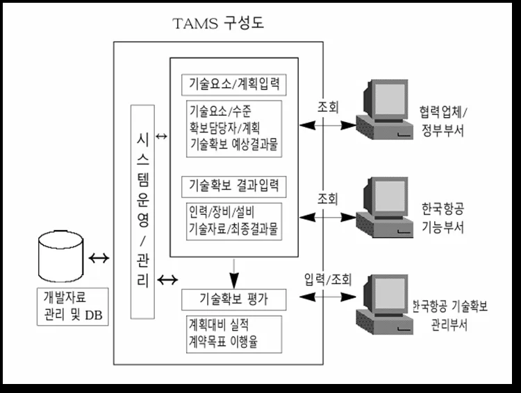
이러한 데이터 관리 시스템은 개별 엔지니어의 머릿속에만 머물 수 있는 지식을 조직 전체의 자산으로 만드는 역할을 했다. 신입 엔지니어가 입사해도 과거의 개발 이력과 기술 자료를 데이터베이스에서 찾아보면서 빠르게 학습할 수있었고, 프로젝트가 끝난 후에도 그 과정에서 얻은 노하우가 사라지지 않고 다음 프로젝트에 활용될 수 있었다. 또한 문제가 발생했을 때 유사한 사례를 검색하여 해결책을 찾을 수 있는 장점도 있었다. 이처럼 체계적인 데이터 관리와 지식 공유 시스템은 조직의 학습 속도를 크게 가속화하고, 기술 내재화를 촉진하는 핵심 인프라였다.
5.2.3. 연구기관의 기술 이전 및 협력
항공기 개발은 기업 단독으로 수행할 수 없는 복합 기술 분야이며, 기초 연구와 산업 개발이 유기적으로 연결되는 구조가 필수적이다. 한국의 전투기 개발과정에서는 ADD가 수행한 선행 연구와 KAI의 체계개발 능력이 결합되면서 기술 축적의 선순환이 형성되었다. ADD는 T-50 개발 이전부터 KTX-2 탐색개발을통해 공기역학, 비행제어, 복합재 구조 등 초음속 항공기에 필요한 핵심 기술을축적해왔다. 풍동시험, 비행특성 예측, 구조 시험 등은 높은 위험을 수반하는 기초 연구 단계였기 때문에 국가 연구기관이 담당하는 것이 적합했다. 이 과정에서 확보된 연구자료와 설계 데이터는 체계개발의 기반이 될 중요한 자산이었다. 체계개발 단계로 넘어오면서 이러한 선행 기술은 KAI로 이전되었다. 이는 단순한 기술 제공이 아니라, 연구기관과 산업체의 역할을 분리하는 국제적 개발관행에 따른 것이었다. 특히 공동개발 파트너였던 록히드마틴은 투자 조건으로체계개발 주체가 기업이어야 한다는 점을 명확히 요구했다. 연구기관이 체계개발을 담당할 경우 고객 요구에 맞춘 설계 변경, 개발 중 문제 해결, 비행시험대응 등 실시간 의사결정이 어렵기 때문이다. 따라서 ADD는 고위험 기초 연구를 담당하고, KAI는 그 기술을 기반으로 실제 항공기를 설계하고 개발하는 구조가 자연스럽게 형성되었다. ADD가 구축한 기술 기반과 KAI의 설계·시험 능력, 록히드의 공동개발 지원이 결합되면서 T-50 개발 체계가 완성되었다. 이는 이후 KF-21까지 이어지는 한국형 항공기 개발의 핵심 협력 모델로 자리잡았다.
5.3. 역량 확장
T-50 개발을 통해 축적된 역량을 바탕으로, 한국은 KF-21 개발 단계에서 기존에 해외에 의존하던 핵심 기술을 국산화하고 차세대 전투기를 독자적으로 개발할 수 있는 능력을 갖추게 되었다. 이 단계는 단순히 배운 것을 따라 하는 수준을 넘어서, 스스로 설계하고 통합하며 검증할 수 있는 완전한 역량 확장의 단계이다.
5.3.1. 3차원 동시공학 설계 환경 구축
과거 항공기 설계는 평면 도면을 기반으로 이루어졌기 때문에 복잡한 3차원구조를 정확히 표현하기 어려웠다. 부품 간섭이나 조립 문제는 시제기를 만든뒤에야 발견되는 경우가 많았고, 이런 반복 수정은 개발 기간과 비용을 크게 증가시켰다.
KF-21 개발에는 3차원 동시공학 기반의 COMOK 체계를 적용하여 설계–해석 –제작 준비를 통합 검증하였다(그림 18 참조). COMOK은 3차원 설계와 실제 제작 공정을 동시에 검증하는 체계로, 설계팀과 생산팀, 해석팀이 한 공간에서 같은 데이터를 보며 문제를 실시간으로 해결하는 방식이다. 예를 들어 설계 엔지니어가 모델을 수정하면, 구조 해석팀이 즉시 강도나 안전성을 검토하고, 생산팀은 공구 접근성이나 조립 순서를 동시에 확인했다. 이 과정에서 간섭이나 제작상의 어려움이 발견되면, 설계 단계에서 바로 수정해 다음 단계로 넘길 수 있었다.
그림 18. T-50 COMOK 시스템을 활용한 동시공학 설계
* 출처: “T-50의 꿈과 도전”
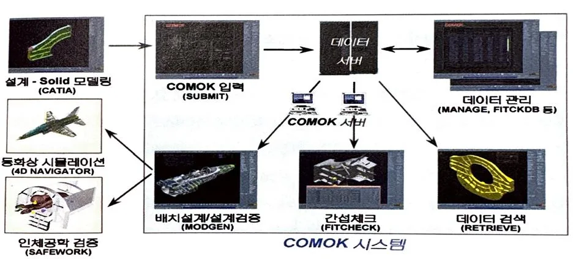
이러한 3차원 동시공학 설계 환경은 개발 기간과 비용을 획기적으로 단축시켰다(그림 19 참조). 과거에는 설계 오류를 발견하고 수정하는 데 몇 달이 걸리기도 했지만, 디지털 목업 환경에서는 몇 시간 만에 검증하고 수정할 수 있었다. 또한 시제기 제작 전에 대부분의 문제를 해결함으로써, 시제기 제작 비용을
크게 절감할 수 있었다.
그림 19. T-50 설계 및 시제작 일정 단축
* 출처: “T-50의 꿈과 도전”
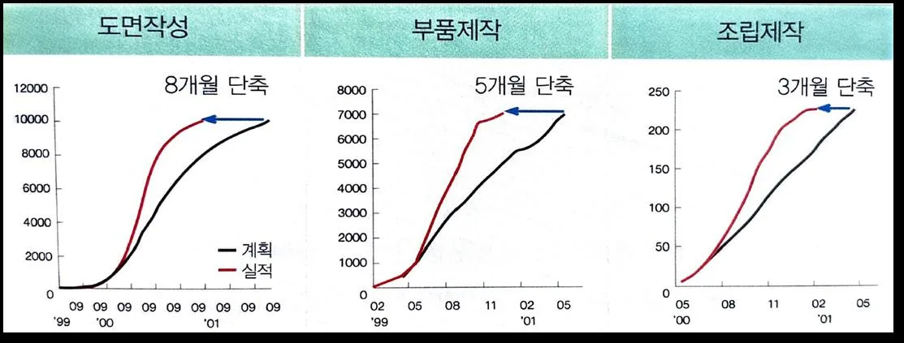
5.3.2. 소프트웨어 분야 독자개발 능력 확보
현대 전투기에서 가장 중요한 것은 하드웨어만이 아니다. 오히려 소프트웨어와 전자 시스템이 전투기의 성능을 결정하는 핵심 요소가 되었다. 전투기의 두뇌에 해당하는 비행제어 시스템과 임무 컴퓨터, 그리고 눈에 해당하는 레이더는가장 첨단 기술이 집약된 분야이며, 동시에 기술 보호 장벽이 가장 높은 분야이기도 하다.
비행제어 법칙은 조종사의 조작을 항공기의 움직임으로 변환하는 핵심 소프트웨어다. 조종사가 조종간을 당기면 얼마만큼의 힘으로 승강타를 움직일 것인지, 바람이 불거나 속도가 변할 때 어떻게 자동으로 보정할 것인지 등을 결정하는 복잡한 알고리즘이다. 이는 항공기의 안전성과 기동성을 직접적으로 좌우하기 때문에 각 나라의 전투기 제조사들이 가장 철저하게 보호하는 기술이다. T- 50 개발 당시에도 한국은 록히드마틴으로부터 비행제어 법칙에 대한 완전한 기술 이전을 받지 못했다. 블랙박스 형태로 제공받아 사용할 수는 있었지만, 내부알고리즘을 이해하거나 수정할 수는 없었다. KF-21 개발에서 KAI는 이 난제를돌파했다. KAI와 국내 협력업체들은 T-50 개발 과정에서 축적한 비행 시험 데이터와 시뮬레이션 결과를 바탕으로, 독자적인 비행제어 법칙을 개발하는 데 성공했다. 수십만 줄의 코드를 작성하고, 수천 번의 시뮬레이션을 돌리며, 실제 비행
시험을 통해 검증하는 긴 과정을 거쳤다. 이제 한국은 전투기의 비행 특성을 자유롭게 조정하고 최적화할 수 있는 능력을 갖추게 되었다.
임무 컴퓨터 역시 독자 개발에 성공한 핵심 장비다. 임무 컴퓨터는 레이더,
센서, 무장 등 항공기의 모든 시스템을 통합하여 조종사에게 통합된 전술 상황을 제공하는 중앙 처리 장치다. 과거 T-50에서는 이 역시 해외에서 도입했지만, KF-21에서는 완전히 국산화되었다. 2023년 11월 8일 KAI는 항공기개발 항공전자 분야에서 CMMI5 2.2 버전의 최고등급인 레벨5 인증 승인을 획득했다.
5.4. 성과 분석
KF-21 개발은 KAI라는 한 기업만의 성과가 아니다. 이는 700개가 넘는 국내협력업체들이 참여한 거대한 산업 생태계의 승리이다. 전투기 한 대에는 수만
개의 부품이 들어가는데, KAI가 이 모든 것을 직접 만들 수는 없다. 따라서 각분야의 전문 업체들이 분업하여 부품을 공급하고, KAI는 이를 통합하는 체계통합자 역할을 수행한다.
KF-21 개발에서는 가능한 한 많은 부품을 국내에서 생산하려고 노력했다. 초기에는 첨단 부품들을 해외에서 수입해야 했지만, 개발이 진행되면서 점차 국내업체들이 기술을 습득하고 국산화에 성공했다. 예를 들어, 항공기 동체에 사용되는 고강도 복합재료, 엔진 부품에 사용되는 내열 합금, 랜딩기어의 고정밀 유압 시스템, 조종석의 다기능 디스플레이 등이 국산화되었다.
이러한 부품 국산화는 국내 중소, 중견 기업들의 기술 수준을 비약적으로 향
상시켰다. 항공우주 산업에서 요구하는 품질 기준은 일반 산업보다 훨씬 엄격하다. 불량률이 백만분의 일 수준으로 낮아야 하고, 모든 제조 과정이 문서화되어추적 가능해야 하며, 극한 환경에서도 안정적으로 작동해야 한다. 국내 업체들이 이러한 높은 기준을 충족하기 위해 공정을 개선하고 품질 관리 시스템을 고도화하면서, 자연스럽게 전반적인 기술 역량이 상승했다.
CMMI(Capability Maturity Model Integration)는 소프트웨어와 시스템공학(SE) 분야의 개발역량을 평가하는 대표적인 국제 기준
이는 단순히 전투기 부품만 잘 만들게 되었다는 의미가 아니다. 항공우주 수준의 기술과 품질 관리 능력을 확보한 기업들은 다른 첨단 산업 분야로도 진출할 수 있는 역량을 갖추게 된다. 실제로 KF-21 개발에 참여한 많은 업체들이우주 발사체, 드론, 도심 항공 모빌리티 등 새로운 분야로 사업을 확장하고 있다. 이는 KF-21 개발이 만들어낸 긍정적인 파급효과라고 할 수 있다.
5.4.1. 경제적 성과
경제적 측면에서도 KF-21 사업의 효과는 매우 크다. 정부와 연구기관의 분석에 따르면, KF-21 개발과 양산은 약 24조 원의 생산 유발 효과를 창출할 것으로예상된다. 생산 유발 효과란 직접적인 항공기 생산뿐만 아니라, 부품 공급업체, 소재 업체, 장비 업체 등 연관 산업 전체에서 발생하는 생산 활동을 모두 합친것이다. 또한 약 11만 명의 고용 창출 효과도 기대된다. 이는 KF-21 사업이 단순히 국방력 강화뿐만 아니라 경제 성장과 일자리 창출에도 크게 기여한다는것을 보여준다.
더 나아가, KF-21은 수출 가능성도 높다. 이미 한국은 T-50을 기반으로 개발한경공격기 FA-50을 여러 나라에 수출하는 데 성공했다. FA-50은 폴란드, 이라크, 필리핀, 태국 등에 수출되었으며, 높은 성능 대비 가격 경쟁력으로 호평을 받고있다. KF-21 역시 4.5세대 전투기 시장에서 경쟁력 있는 가격과 성능을 갖추고있어, 향후 수출로 이어질 가능성이 크다. 특히 미국이나 유럽의 전투기는 너무고가이고, 중국이나 러시아의 전투기는 신뢰성에 의문이 있는 중소 국가들에게 KF-21은 매력적인 선택지가 될 수 있다.
수출이 성공한다면 그 경제적 효과는 더욱 커진다. 항공기 수출은 단순히 완제품을 파는 것에 그치지 않고, 부품 공급, 유지보수, 업그레이드, 교육훈련 등장기간에 걸친 협력 관계를 만들어낸다. 이는 지속적인 수익 창출과 함께 국제방산 시장에서 한국의 위상을 높이는 효과도 가져온다. 실제로 FA-50 수출의성공은 한국 방산이 국제 시장에서 신뢰받는 브랜드로 자리 잡는 데 크게 기여했으며, KF-21은 이러한 명성을 더욱 공고히 할 것으로 기대된다.
5.4.2. 산업적 성과
흡수역량 강화를 통한 기술 자립 전략의 성과는 KF-21의 개발 일정을 통해서도 명확히 증명된다. 일반적으로 전투기 개발은 기술적 난이도가 높고 복잡하여, 산업 기반이 성숙하지 않은 후발주자의 경우 막대한 시행착오와 장기간의개발 기간이 소요되기 마련이다. 그러나 한국은 KF-21 개발(탐색개발~전력화)에약 15년이 소요될 것으로 예상되며, 이는 항공 선진국들의 평균적인 개발 기간 (약 13.7년)과 비교해도 손색없는 수준이다(그림 20 참조).
구체적으로 비교해보면 그 성과는 더욱 두드러진다. 이미 기술과 산업 기반이완성된 상태였던 미국의 F-15나 F-16(약 8년)을 제외하면, 대부분의 4세대 및 4.5세대 전투기 개발에는 상당한 시간이 소요되었다. 유럽 4개국이 협력하여 개발한 유로파이터(Eurofighter)는 복잡한 의사결정 구조로 인해 약 16년이 걸렸고, 기술 자립이 미성숙했던 중국의 J-10은 이스라엘의 기술 지원(Lavi)에도 불구하고 약 20년이라는 긴 시간이 소요되었다.
반면, 한국은 4.5세대 첨단 전투기인 KF-21을 개발하면서도 유로파이터보다단축된 일정을 보여주고 있다. 이는 KF-16 생산과 T-50 개발을 통해 축적한 기술적 노하우와 관리 역량이 KF-21 사업에 효과적으로 전이되었음을 의미한다. 즉, 단계적인 기술 흡수 전략이 개발 리스크를 최소화하고 프로세스를 최적화하여, 후발주자가 겪는 '학습 곡선(Learning Curve)'의 시간을 획기적으로 단축시킨성공적인 사례라 할 수 있다.
그림 20. 국가별 전투기 개발 기간 비교
* 출처: “A Comparative Study of Global Fighter Development Timelines”, 본인 재작성
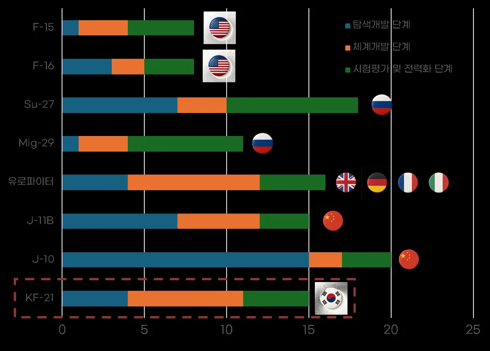
5.4.4. 유사 사례 분석
한국의 전투기 개발 성과를 보다 명확히 평가하기 위해서는 유사한 조건에서전투기 개발을 추진한 국가들과의 비교 분석이 필요하다. 주요 비교 대상으로는브라질의 AMX, 일본의 F-2, 인도의 TEJAS를 선정하였으며, 각국의 기술이전방식, 자립도 발전 경로, 후속 개발 연결성을 중심으로 한국 사례와의 차별성을분석하였다.
1. 브라질 AMX: 제한적 기술이전과 독자개발 단절
그림 21. 브라질 AMX
* 출처: 나무위키
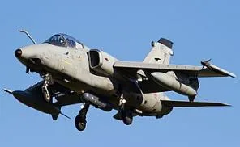
브라질의 AMX 프로젝트(1978-1989)는 이탈리아 Aermacchi 및 Embraer와의 공동개발 형태로 진행된 경공격기 사업이다. 개발 방식은 브라질-이탈리아가 주도권을 분담하는 공동개발 구조였으나, 핵심 설계와 시스템 통합 기술은 이탈리아가 주도하였고 브라질은 주로 생산과 일부 엔진 면허생산을 담당하는 역할에국한되었다.
이 과정에서 브라질은 항공기 조립 공정과 품질관리 체계를 확보하고 일부엔진 구성품 생산 능력을 갖추게 되었으나, 항공전자, 비행제어, 무장통합 등 고부가가치 핵심 기술은 이탈리아와 해외 공급업체에 의존하는 구조가 고착되었다. 특히 설계권과 체계종합 역량이 이전되지 않아, AMX 사업 종료 이후 브라질은 독자적인 전투기 개발로 이어지지 못하고 현재까지도 해외 완제기 도입이나 기술협력 방식에 의존하고 있다.
한국의 KF-16 면허생산과 비교할 때, 브라질 AMX 사례는 기술이전의 범위와깊이에서 명확한 차이를 보인다. KF-16 사업에서 한국은 단순 조립을 넘어 약 1,600여 개의 생산기술을 습득하였고, 부품 국산화를 적극 추진하며 협력업체육성과 기술자문요원 연수 체계를 구축하였다. 더 나아가 생산 과정에서 축적한품질관리와 시험평가 경험은 이후 T-50 개발의 기반이 되었다. 반면 브라질은생산 경험을 확보했음에도 설계 및 체계종합 역량으로 발전시키지 못해 독자개발로 이어지지 못한 구조적 한계를 보였다.
2. 일본 F-2: 방위 정책 제약과 중간 수준 자립도
그림 22. 일본 F-2
* 출처: 나무위키
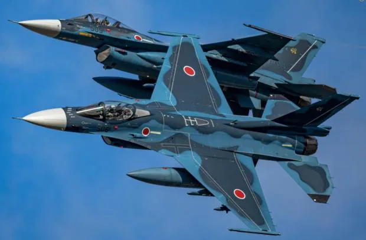
일본의 F-2 프로젝트(1987-2000)는 F-16을 기반으로 한 미-일 공동개발 사업으로, 일본이 기체 확대 설계와 능동위상배열(AESA) 레이더 등 일부 핵심 기술을자체 개발하는 형태로 진행되었다. 일본은 기존 F-1 전투기 개발 경험을 보유하고 있었고, 미쓰비시 중공업을 중심으로 한 방산 기반이 성숙한 상태였기 때문에 F-2 개발에서 상당한 자율성을 확보할 수 있었다.
그러나 F-2 사업에서도 엔진(F110-GE-129), 비행제어 소프트웨어, 임무컴퓨터등 핵심 구성품은 미국에 의존하는 구조가 지속되었으며, 미국의 기술 통제와방위 정책 제약으로 인해 완전한 자립도 달성에는 한계가 있었다. 특히 F-2 양산 종료 이후 일본은 독자 전투기 개발을 추진하지 못하고, 영국·이탈리아와의국제 공동개발 체제인 GCAP(Global Combat Air Programme)으로 방향을 전환하였다. 이는 일본이 F-2를 통해 확보한 기술 기반에도 불구하고 독자 개발의 경제성 및 전략적 타당성 문제로 인해 단독 개발 경로를 지속하지 못했음을 보여준다.
한국의 T-50 공동개발 사례와 비교할 때, 일본 F-2는 기술적 출발점에서는 우위에 있었으나 체계개발 주도권과 핵심 기술 내재화 측면에서는 상대적으로 제한적이었다. T-50 개발에서 KAI는 록히드마틴과 1:1 엔지니어 팀을 구성하고 미국 현지에 구매 사무소 및 Chief Engineer Office를 운영하며 147개 해외 협력업체를 직접 관리하는 등, 체계종합 역량을 실질적으로 확보하기 위한 전략적 구조
를 설계하였다. 또한 비행제어 소프트웨어(Flight Control OFP) 획득을 통해 항공기 운용의 핵심 기술을 내재화하였으며, 이는 이후 KF-21에서 독자적인 비행제어 법칙 개발로 이어지는 기반이 되었다. 일본이 F-2 이후 독자 개발을 지속하지 못한 반면, 한국은 T-50에서 확보한 체계종합 역량을 기반으로 KF-21 독자개발로 자연스럽게 연결되었다는 점에서 명확한 차별성을 보인다.
3. 인도 TEJAS: 장기 개발 지연과 성능 제약
그림 23. 인도 TEJAS
* 출처: 나무위키
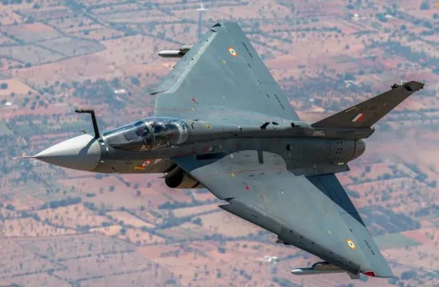
인도의 TEJAS 프로젝트(1983-2015)는 공식적인 기술이전 없이 해외 컨설팅과부분적 기술 지원을 받아 독자 개발을 추진한 사례이다. 인도는 HAL(Hindustan Aeronautics Limited)을 중심으로 기체 설계부터 시작하였으나, 항공 산업 기반이충분히 성숙하지 않은 상태에서 독자 개발을 시도하면서 개발 기간이 33년으로장기화되었다. 특히 엔진(미국 GE F404), 레이더(이스라엘 Elta), 비행제어 시스템(미국 Lockheed Martin 컨설팅) 등 핵심 구성품은 외산 의존도가 높아 자립도는 매우 낮은 수준에 머물렀다.
더욱이 TEJAS는 개발 과정에서 기술적 난관과 성능 목표 미달 문제가 반복되면서 양산 시점에서도 인도 공군의 요구 성능을 완전히 충족하지 못하는 한계를 보였다. 장기간의 개발 지연은 초기 설계 콘셉트가 노후화되는 결과를 초래했고, 이는 TEJAS의 전투 성능이 동시대 4.5세대 전투기들에 비해 뒤처지는원인이 되었다.
한국의 KF-21 독자개발 사례와 비교할 때, 인도 TEJAS는 기술 축적 경로의
부재가 개발 실패로 이어진 대표적 사례라 할 수 있다. 한국은 KF-16 면허생산 (11년)과 T-50 공동개발(9년)을 통해 약 20년간 단계적으로 제조, 설계, 체계종합역량을 축적한 후 KF-21 독자개발(15년 예상)에 착수하였다. 이러한 단계적 접근은 개발 리스크를 최소화하고 기술 내재화를 촉진하여, KF-21이 초도 비행 성공(2022년) 이후 체계개발이 순조롭게 진행되고 2024년 양산 계약까지 체결되는성과로 이어졌다. 반면 인도는 충분한 기술 기반 없이 독자 개발을 시도하면서 33년이라는 긴 개발 기간과 성능 제약이라는 대가를 치렀다.
기술적 성과 측면에서도 KF-21은 TEJAS를 크게 상회한다. 앞서 분석한 성능지표에서 KF-21은 F-15C, F-16C 등 검증된 현용 전투기와 유사한 성능 범위에위치하며 4.5세대 전투기로서의 기술적 요구사항을 충족한다. 반면 TEJAS는 경량 전투기로 분류되며 추력비와 기동성 모두에서 4.5세대 전투기 대비 낮은 성능을 보인다. 이는 한국이 단계적 기술 축적을 통해 고성능 전투기 개발 역량을확보한 반면, 인도는 기술 기반 부족으로 인해 성능 목표 달성에 실패했음을 의미한다.
대한민국을 포함한 4개 국가의 전투기 개발 사례를 종합적으로 비교하면, 기술 축적 경로와 자립도, 후속 개발 연결성에서 명확한 차이가 드러난다.
한국은 광범위한 기술이전을 수반한 KF-16 면허생산을 통해 제조·품질관리· 시험평가 기반을 확보하고, T-50 공동개발에서 설계·체계종합 역량을 내재화하며, 최종적으로 KF-21 독자개발로 이어지는 일관된 발전 경로를 구축하였다. 이과정에서 정부의 장기 전략적 투자, 항공산업 일원화, ADD의 선행연구 지원, 국내 협력업체 육성 등 국가혁신시스템 전반이 조화롭게 작동하며 기술 자립도를단계적으로 높여갔다. 그 결과 한국은 현재 높은 자립도를 확보하였으며, KF-21 이후 5세대 전투기 개발까지 자연스럽게 연결될 수 있는 기술적·산업적 기반을갖추게 되었다.
브라질은 AMX 생산 경험을 확보했으나 설계 역량으로 발전시키지 못해 낮은 자립도에 머물렀고 독자개발로 이어지지 못했다. 일본은 F-2를 통해 중간 수준의 자립도를 달성했으나 독자 개발의 경제성 문제로 국제 공동개발로 방향을전환하였다. 인도는 기술 기반 없이 독자 개발을 시도하면서 장기 개발 지연과성능 제약이라는 결과를 낳았으며, 자립도 역시 낮은 수준에 머물렀다.
이러한 비교 분석은 한국의 KF-16-T-50-KF-21로 이어지는 단계적 기술 축적전략이 후발국의 전투기 개발 성공 모델로서 중요한 함의를 지님을 보여준다
(그림 24 참조). 특히 흡수역량 이론에서 강조하는 누적성과 경로 의존성, 그리
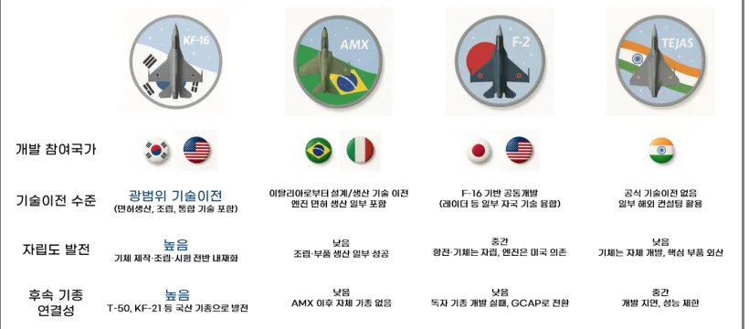
고 국가혁신시스템의 조정 능력이 실제로 작동한 성공 사례로서, 한국의 경험은다른 후발국들이 첨단 무기체계 자립을 추구할 때 참고할 수 있는 중요한 벤치마크가 될 것이다.
그림 24. 해외 유사사례 비교
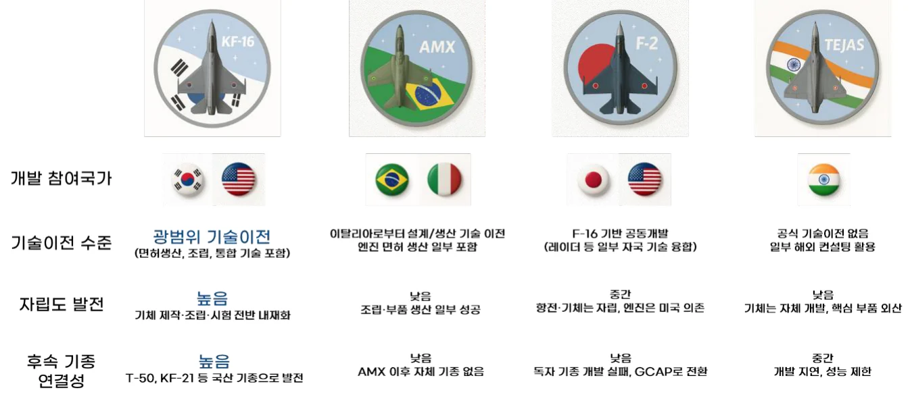
* 그림 출처: 본인 작성
제 6장. 결론 및 시사점
6.1. 결론
대한민국의 KF-21 독자개발 성공은 체계적인 흡수역량 강화 전략이 장기간에걸쳐 작동한 결과이다. 본 연구는 Cohen과 Levinthal의 흡수역량 이론을 통해 한국이 어떻게 전투기 독자개발 역량을 확보했는지를 분석하였으며, 흡수 기반 마련, 흡수역량 강화, 역량 확장이라는 3단계 발전 경로를 통해 다음과 같은 결론을 도출하였다.
첫째, 흡수 기반 마련 단계에서 외부 지식을 받아들일 수 있는 제도적·산업적
토대가 구축되었다. 1990년대 정부 주도로 추진된 항공산업 일원화는 삼성항공, 대우중공업, 현대우주항공의 분산된 역량을 KAI로 집중시켜 규모의 경제와 학습 효율성을 동시에 확보하였다. KF-16 면허생산을 통한 절충교역 활용과 국제협력 구조 확보는 선진 기술에 접근할 수 있는 경로를 열었다. 이러한 흡수 기반은 단순한 제도적 지원을 넘어, 기업이 외부 지식을 인식하고 획득 (Acquisition)할 수 있는 환경을 조성함으로써 이후 단계적 기술 축적의 필수 전제조건으로 작용하였다.
둘째, 흡수역량 강화 단계에서 외부 기술을 조직 내부의 역량으로 전환하는체계가 완성되었다. KF-16 면허생산에서 축적된 제조·품질관리 경험은 T-50 공동개발에서 설계·체계종합 기술을 더 빠르게 이해하고 소화(Assimilation)하는기반이 되었다. 이는 사전 지식이 새로운 지식의 흡수 능력을 결정한다는 흡수역량이론의 핵심 명제를 실증한다. T-50 개발 과정에서 구축된 R&D 학습조직, TAMS 기술자료 공유 체계, 1:1 엔지니어 팀 운영, ADD의 선행연구 기술 이전은 단순히 기술을 받아들이는 수준을 넘어 이를 내부 맥락에 맞게 변형(Transformation) 하는 조직적 메커니즘으로 작동하였다. 특히 비행제어 소프트웨어 획득은 항공기 운용의 핵심 노하우를 내재화한 결정적 성과였으며, 이는 약 20년간의 단계적 학습이 만들어낸 누적성과 경로 의존성의 결과였다.
셋째, 역량 확장 단계에서 학습한 지식을 독자적 혁신으로 전환하는 능력이확보되었다. KF-21 개발에서 구현된 3차원 동시공학 설계 환경, 독자적 비행제어 법칙 개발, 항공전자 시스템 내재화는 외부에서 학습한 지식을 한국의 개발환경에 맞게 재해석하고 새로운 기술로 창출(Exploitation)한 결과이다. 특히 CMMI 레벨5 인증 획득을 통해 소프트웨어 개발 프로세스가 국제 최고 수준에도달했음을 객관적으로 입증했다. 약 15년의 개발 기간으로 선진국 수준에 근접한 성과는 기술 기반 없이 독자 개발을 시도한 인도 TEJAS나 제한적 기술이전에 머문 브라질 AMX와 비교할 때, 단계적 흡수역량 강화 전략의 효과성을 명확히 보여준다. 이제 한국은 생산 중심 산업에서 설계·시스템 통합 중심의 고부가가치 산업으로 완전히 전환하였으며, 전투기 개발의 전 과정을 독자적으로 수행할 수 있는 기술자립 기반을 확보하였다.
결론적으로, KF-21 개발은 흡수역량 이론이 제시하는 획득-동화-변형-활용의 4 단계 메커니즘이 체계적으로 작동한 성공 사례이다. 흡수 기반 마련을 통해 외부 지식을 받아들일 수 있는 환경을 조성하고, 단계적 개발 경험을 통해 흡수역량을 지속적으로 강화하며, 최종적으로 독자적인 설계·개발·검증 능력으로 확장하는 전 과정은 기술 후발국이 첨단 무기체계 자립을 달성하는 전략적 경로를명확히 제시한다. 이는 외부 기술을 단순 도입하는 것이 아니라, 조직 내부에서이를 소화·변형·활용하는 역량을 체계적으로 구축할 때 비로소 기술자립이 가능하다는 흡수역량 이론의 핵심 통찰을 실증하는 사례로 평가할 수 있다.
6.2. 시사점
KF-21 개발 사례는 흡수역량 관점에서 국내 첨단 산업 발전에 중요한 시사점을 제공한다.
첫째, 기술자립은 단계적 학습 과정의 산물이며, 급진적 도약보다는 체계적축적이 중요하다. KF-21 성공의 핵심은 KF-16 면허생산(제조 역량), T-50 공동개발(설계·체계종합 역량), KF-21 독자개발(완전 자립)로 이어지는 약 30년간의 단계적 학습에 있었다. 각 단계에서 확보한 경험과 지식은 다음 단계의 학습 속도를 가속화하는 누적 효과를 만들었다. 인도 TEJAS의 실패는 충분한 기반 없이독자 개발을 시도한 결과였으며, 이는 기술 축적의 단계적 접근이 필수적임을역설적으로 증명한다. 따라서 반도체, 배터리, 수소, 우주항공 등 첨단산업에서도 단계적 기술 학습 경로를 설계하고, 각 단계에서 충분한 경험 축적 시간을확보하는 전략이 필요하다.
둘째, 흡수역량은 조직의 체계적 학습 메커니즘을 통해 구축된다. KAI의 성공은 단순히 우수한 개인 엔지니어의 집합이 아니라, R&D 학습조직 운영, 기술자료 공유 체계(TAMS), 1:1 엔지니어 팀 구성, 해외 현지 사무소 설립 등 조직 차원의 학습 인프라가 뒷받침되었기 때문이다. 이러한 학습 메커니즘은 개인의 암묵적 지식을 조직의 역량으로 전환하고, 프로젝트 종료 후에도 지식이 소실되지않도록 보존하는 역할을 하였다. 따라서 기업들은 기술 도입이나 협력 사업을추진할 때, 단순히 기술 자료를 받는 것에 그치지 않고, 조직 내부의 학습 체계를 동시에 구축해야 한다.
셋째, 기술협력의 구조 설계가 흡수역량 강화의 핵심이다. T-50 개발에서 KAI 가 체계종합 주도권을 확보하고, 147개 해외 협력업체를 직접 관리하며, 비행제어 소프트웨어를 협상을 통해 획득한 것은 단순한 기술 이전을 넘어선 전략적협력 구조의 결과였다. 반면 브라질 AMX는 이탈리아가 주도하는 구조에서 생산만 담당하여 핵심 역량 이전에 실패하였다. 이는 기술협력 시 계약 구조, 역할 분담, 의사결정권이 흡수역량 강화에 결정적 영향을 미친다는 것을 보여준다. 따라서 국제 공동개발이나 기술협력 사업에서는 초기 단계부터 명확한 기술이전 범위, 주도권 확보, 학습 기회 보장 등을 전략적으로 설계해야 한다.
넷째, 정부의 역할은 흡수 기반 조성에 집중되어야 하며, 실제 흡수는 기업의역량에 달려 있다. 정부는 항공산업 일원화, 절충교역 제도 활용, 연구개발 투자, 안정적 수요 보장 등을 통해 기업이 기술을 학습할 수 있는 환경을 조성하였다. 그러나 도입된 기술을 실제로 소화하고 내재화하는 과정은 KAI의 조직적학습 능력, 인력 양성, 데이터 관리 체계 등 기업 내부 역량에 의해 결정되었다. 제도가 기회를 열어줄 수는 있지만, 기술을 경쟁력으로 전환하는 주체는 결국기업이다. 따라서 정부 정책은 단순한 재정 지원을 넘어, 기업의 흡수역량을 강화할 수 있는 학습 기회 제공, 장기 프로젝트 보장, 산학연 협력 체계 구축 등에 초점을 맞추어야 한다.
다섯째, 핵심 기술의 내재화 없이는 진정한 기술자립이 불가능하다. KF-21이독자 전투기로 평가받는 이유는 단순히 국내에서 조립했기 때문이 아니라, 비행제어 법칙, 항공전자 시스템, 임무컴퓨터 등 항공기의 '두뇌'에 해당하는 소프트웨어와 시스템 통합 기술을 자체 개발했기 때문이다. 일본 F-2가 엔진과 비행제어 소프트웨어를 미국에 의존하여 완전한 자립에 도달하지 못한 것과 대조적이다. 이는 첨단산업에서 하드웨어 생산 능력 뿐 아니라 설계, 소프트웨어, 시스템통합 등 고부가가치 핵심 기술의 내재화가 필수적임을 보여준다.
종합하면, KF-21 개발 사례는 흡수역량 이론이 제시하는 기술 학습의 원리가실제로 작동함을 보여주는 실증 사례이다. 기술자립은 외부 기술을 단순히 받아오는 것이 아니라, 조직 내부에서 이를 이해하고, 소화하고, 재구성하며, 새로운가치로 창출할 수 있는 흡수역량을 체계적으로 구축할 때 비로소 달성된다. 한국의 전투기 개발 경험은 첨단산업 발전을 추구하는 다른 분야와 국가들에게단계적 학습, 조직적 역량 구축, 전략적 협력 구조 설계, 핵심 기술 내재화의 중요성을 명확히 보여주는 벤치마크로 기능할 것이다.
Reference
논문 [1] Jon S. Eckert, “Trends in U.S. Air Force Tactical Fighter Life Cycles”, Ph.D. Dissertation, Cornell University, Ithaca, NY, USA, 1979. Fighter Program”, MIT Defense Economics Paper, Massachusetts Institute of Technology, Cambridge, MA, USA, 1992.
[3] N. B. Michael, “United States Foreign Military Sales Strategy: Coalition Building or Protecting the Defense Industrial Base”, U.S. Congressional Record, Washington D.C., USA, 1995.
[4] Hobday, M.. “Product complexity, innovation and industrial organization”, Research policy, 26(6), 689-710, 1998.
[5] 최원욱, “국내 항공산업 기술수준 제고방안에 관한 연구: 군용항공기
사업 사례분석을 중심으로”, 국방대학교 석사 학위 논문, 2003.
[6] 최정혁, Political Economy of Late Industrialization in High Tech: Politics, Policy, and Innovation in the Korean Aircraft Manufacturing Sector, 한국개발연구원 국제정책대학원 박사 학위 논문, 2018.
정기간행물 [7] 조황희, “항공기산업의 기술혁신 패턴과 전개 방향,” 과학기술정책연
구원(STEPI), 2000.
[8] 안영수, 김성배, “한미간 T-50 항공기 공동개발을 위한 전략적 제휴분석과 정책과제”, 산업연구원, 2006년 8월.
[9] 장원준, 이춘주, “국방과학기술혁신을 위한 개방형 기술혁신 개념 적
용방안 연구”, 기술혁신학회지, 제12권 2호, 312-334쪽, 2009. [10] 최우영, “한국 항공기산업의 발전 과정과 현황,” 항공우주산업기술
동향, 제9권, 제1호, 27-36쪽, 한국항공우주연구원, 2011.
[11] Maggie Marcum, “A Comparative Study of Global Fighter Development Timelines,” SITC Policy Briefs, Univ. of California San Diego, No. 3, pp. 1- 12, Jan. 2014.
[12] 박재찬, 한국형 전투기(KF-X) 개발의 항공우주산업 기술파급효과에관한 연구, 한국항공경영학회지, 제15권 제5호, 27–41쪽, 2017.
단행본 및 연구보고서 [13] 한국항공우주산업, “한국형 전투기(KFP) 목표수준 연구”, 1993. [14] 안종천, KFP 사업과 항공기 산업, 국방과학연구소, 기고, 대전, 1996. [15] Cohen, W. M., & Levinthal, D. A., “Absorptive capacity: A new perspective on learning and innovation”, UK, 2000.
[16] 한국항공우주산업, “T-50의 꿈과 도전“, 2003.
[17] 한국항공우주산업, “꿈을 현실로! KFP”, 2004.
[18] 이정훈, “T-50, 이렇게 만들었다”, 지식산업사, 2006.
[19] 한국국방연구원(KIDA), 「국방과학기술의 중장기 정책 발전방향」, 서울, 2006.
[20] 한용섭, “함정·항공전력 방위력개선사업 경제적 효과분석 보고서”,
국방대학교, 2010년 12월 [21] 전영훈, “T-50 끝없는 도전“, 월간항공, 서울, 2011.
[22] Lundvall, B., “National Innovation Systems and Globalization”, UK, 2016. [23] 한국항공우주산업, “창립 20주년 사사, 역사편”, 2019.
정부 및 공식문서 [24] G. H. W. Bush Presidential Library, “Memorandum of Conversation – Meeting with President Roh Tae Woo”, The White House, Washington D.C., USA, 1989.
[25] White House, “Briefing Memorandum on Korean Fighter Program (KFP)”, National Security Council, Washington D.C., USA, 1989. [26] U.S. General Accounting Office, “U.S.-Korea Fighter Coproduction Program – The F-16 Version”, GAO/T-NSIAD-91-53, Washington, D.C., Aug. 1, 1991. [27] 산업통상자원부(MOTIE), “항공산업 발전 기본계획(2010–2019)”, 2010.
[28] 형혁규, 김예경, “한국형 전투기 개발 계획: KF-X 사업(보라매사업)”, 국회입법조사처, 현안보고서 Vol. 263, 2015.
[29] 국방기술품질원, “무기체계 연구개발단계 품질관리 기술지원 가이드
북“, 2020.
인터넷 자료 [30] KAI, "KAI, 대한민국 첫 전투기‘KF-21 보라매’시제기 출고", 2021. https://www.koreaaero.com/KO/MediaCenter/NewsRoomView.aspx?NewsPid =3346 [31] 국방부 홈페이지, 무기체계 정의 및 분류.
https://www.mnd.go.kr/mbshome/mbs/mnd/subview.jsp?id=mnd_01140100000 [32] 나무위키, ‘F-X 사업’, ‘KFP 사업‘, ‘KF-16’, ‘T-50 골든이글’, ‘KF-21 보라매‘ [33] 연합뉴스, “한국형 전투기 KF-21 보라매 시제기 출고, 2013. https://www.yna.co.kr/view/GYH20130821001100044 [34] 한국항공우주산업 홈페이지, 25년도 2분기 잠정실적 IR 자료, 2025. [35] 금융감독원, 한국항공우주산업 DART 사업보고서 [36] Bemil 군사세계, “KFX 탐색개발시점에 되돌아보는 T-50 탐색개발, 체계개발“, 2011.
https://bemil.chosun.com/nbrd/bbs/view.html?b_bbs_id=10040&num=64128 [37] 방위사업청 블로그, “국산전투기 KF-21, 자주국방의 한계를 넘다“, 2021.
https://m.blog.naver.com/dapapr/222448194023 [38] WISDOMAIN, 특허분석 [39] 네이버 블로그, “KFX 와 주요 경쟁기종 제원 비교 (C109 Update)”, 2018.
https://m.blog.naver.com/itsley/221318608663 [40] 송용규, “[특별기고] KF-X 사업의 파급효과와 자주국방“, 헤럴드경제칼럼, 2021.
https://news.nate.com/view/20210216n16382?mid=n0701 [41] KBS, “신화창조의 비밀 – 골든이글팀의 도전, 마하 1.0을 돌파하라“, 2003.
https://youtu.be/dTIeOQYuxqA?si=eQmMxly0zPwz9YdA [42] 헤럴드경제, “이일우 KAI 상무 “KFX 개발 그 자체가 경이...대한민국 대표 브랜드 될 것“, 2020.
https://biz.heraldcorp.com/article/2457509 [43] 문화일보, “2026년 실전배치 위해 오늘도 이륙… 공중급유·무장분리도 곧 시험“, 2022.
https://www.munhwa.com/article/11313526 [44] KAI 블로그, “[비전 항공산업] 한중일 전투기 삼국지④ 건국 이래최초 그리고 최대의 무기 획득 사업 KF-16”, 2020.
https://blog.naver.com/koreaaerospace2030/221911266332 [45] 네이버 블로그, “방산 수출과 절충교역”, 2024.
https://blog.naver.com/myloveok/223479798520 [46] KAI 블로그, “KF-21, 전력화 기반 마련 잠정 전투용 적합 판정 획득”, 2023.
https://blog.naver.com/koreaaerospace2030/223125444362